အသံထွက် အခြေခံ မြန်မာဖတ်စာ
Lec0 缅语语音概述
缅语简介
起源与历史缅语源自公元前500年到200年的印度婆罗米文字，使用人口约5000万。
语音特征拥有高低调和短促调四种声调，字母系统包括33个辅音字母和22个元音符号。
语法与词法基于辅音和元音的结合，常见音变现象包括清辅音变浊辅音和元音弱化。
语序基本语序为“主—宾—谓”。
缅语语音
缅语语音由辅音、元音和声调3部分组成
33个辅音
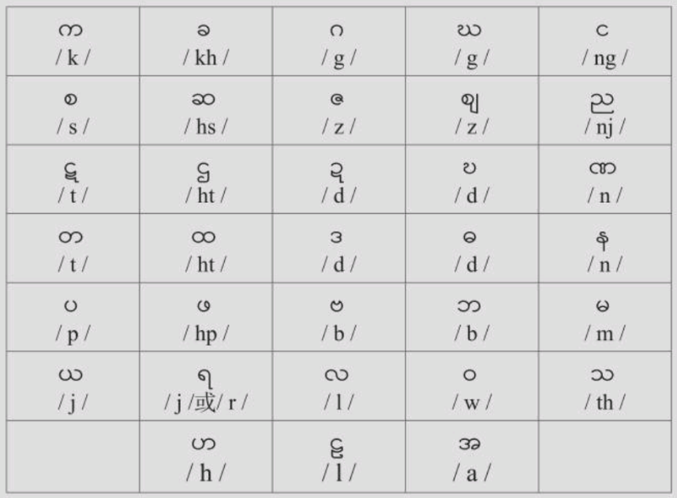
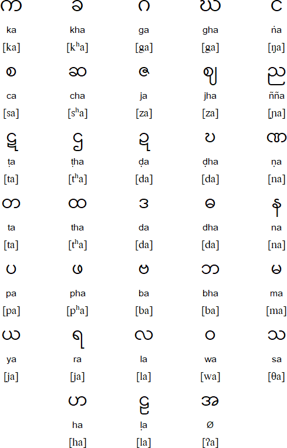
上述33个辅音实际只发23个音
က ခ ဂ ဃ င
စ ဆ ဇ ဈ ဉ
ဋ ဌ ဍ ဎ ဏ
တ ထ ဒ ဓ န
ပ ဖ ဗ ဘ မ
ယ ရ လ ဝ သ
ဟ ဠ အ
元音
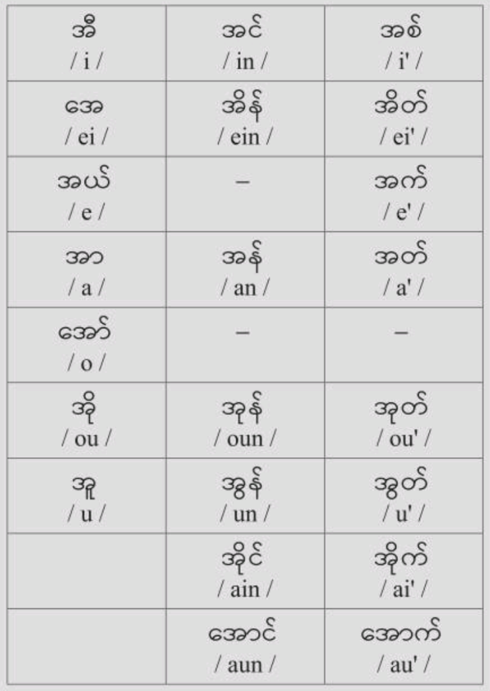
အီ i အင် in အစ် i'
အေ ei အိန် ein အိတ် ei'
အယ် e -- အက် e'
အာ a အန် an အတ် a'
အော် o -- --
အို ou အုန် oun အုတ် ou'
အူ u အွန် un အွတ် u'
အိုင် ain အိုက် ai'
အောင် aun အောက် au'
缅语元音分类总结
缅语有22组元音符号，分为以下几类：
基本元音 包括基础的发音，如长元音等。
鼻化元音 鼻音发音，气流从鼻腔流出。
短元音 发音时间较短的元音。
央元音（半元音） 发音较为轻微，类似辅音的元音。
元音发音位置
元音的发音部位由口腔的气流决定，具体发音位置如下：
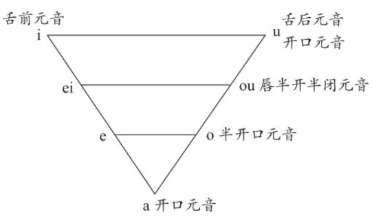
基本元音
7个基本元音：
အီ /i/
အေ /ei/
အယ် /e/
အာ /a/
အော် /o/
အို /ou/
အူ /u/
鼻化元音
鼻化元音的发音时，气流从鼻腔和口腔同时送出。
鼻化元音共7个，其中鼻化单元音有3个：
အင် /in/
အန် /an/
အွန် /un/
鼻化双元音有4个：
အိန် /ein/
အုန် /oun/
အိုင် /ain/
အောင် /aun/
这些元音是/e/和/i/，/o/和/u/，/a/和/i/，/a/和/u/结合的元音。
短促元音
短促元音的发音是由于气流经过喉腔与气管的合并后形成的。
短促音符号：“'”
短促元音共有8个，其中有4个为双元音。
单元音短促元音：
အစ် /i'/
အက် /e'/
အတ် /a'/
အွတ် /u'/
双元音短促元音：
အိတ် /ei'/
အုတ် /ou'/
အိုက် /ai'/
အောက် /au'/
半元音（央元音）
半元音，主要表现为/ə/音。在罗马化转写时，这个元音用字母 "a" 表示。发音时，/a/ 不需要刻意发音，舌位不发生明显的移动，通常是在口腔中自然发出。
发音特点： 该元音发音时舌位处于口腔中间，放松且不完全发音，因此被称为“半元音”。
半元音符号： 半元音在缅语中起到类似元音的作用，常常位于词首或词尾，但并不完全发音。
示例：
例如词汇အဖေ၊ အမေ၊ ဆရာ၊ ဆရာမ၊ မင်္ဂလာပါ等词中，အ ဆ မ ဂ等字母只发半元音
声调
声调特点：
缅语有4种声调：高降调、高平调、低平调、短促调。
发音特点：
高降调53、低平调22、高平调55、短促调4。轻音节没有稳定的调值。
功能：
区别词义
区别语法意义
Lec1 သင်ခန်းစာ ၁ 缅语辅音字母
辅音字母表
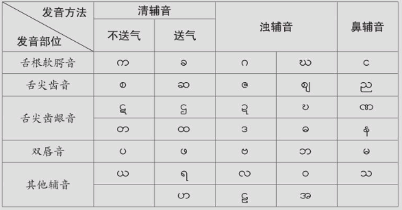
辅音字母名称
缅字母的名称对区分同音异体字至关重要。
辅音字母的名称大多依据其形状命名，具体如下：
形状命名：大部分辅音的名称源于字母形状。
区分同音异体字：名称用于辨别拼写中易混淆的字。
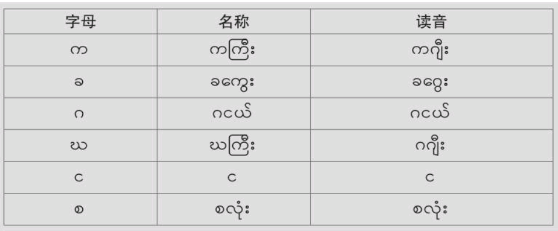
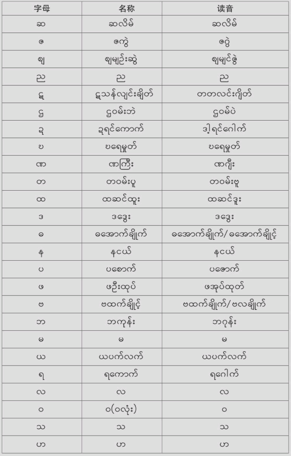
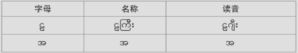
| 字母 | 名称 | 读音 |
|---|---|---|
| က | ကကြီး ka-gyi | ကဂျီး ka-jī |
| ခ | ခကွေး kha-kwe | ခဂွေး kha-wè |
| ဂ | ဂငဃ် ga-ngă | ဂင်ဃ ga-ngă |
| ဃ | ဃကြီး ga-gyi | ဃဂျီး ga-jī |
| င | င ga | င ga |
| စ | စလုံး sa-lone | စလုံး sa-lone |
| ဆ | ဆလိမ် hsa-lain | ဆလိမ် hsa-lain |
| ဇ | ဇကွဲ za-gwe | ဇဂွဲ za-wè |
| ဈ | ဈမျဉ်းဆွဲ za-myin-swe | ဈမျင်ဇွဲ za-myin-zwe |
| ည | ည nya | ည nya |
| ဋ | ဋသန်လျင်းချိတ် ta-than-lyin-chate | တတလင်းချိတ် ta-than-lyin-chate |
| ဌ | ဌဝမ်းဘ hta-wun-ba | ဌဝမ်ပဲ hta-wun-ba |
| ဍ | ဍရင်ကောက် da-yin-kauk | ဒါ့ရင်ကေဂေါက် da-yin-kauk |
| ဎ | ဎရေမှုတ် da-ye-hmout | ဒရေမှုတ် da-ye-hmout |
| ဏ | ဏကြီး na-gyi | ဏဂျီး na-jī |
| တ | တဝမ်းပူ ta-wun-bu | တဝမ်းဗူ ta-wun-bu |
| ထ | ထဆင်ထူး hta-sin-htoo | ထဆင်ဒူး hta-sin-htoo |
| ဒ | ဒထွေး da-dway | ဒထွေး da-dway |
| ဓ | ဓအောက်ချိုက် da-auk-chyike | ဓအောက်ချိုက် da-auk-chyike / ဓအောက်ချိုင့် da-auk-chyin |
| န | နငယ် na-ngè | နငယ် na-ngè |
| ပ | ပစောက် pa-zauk | ပစဇောက် pa-zauk |
| ဖ | ဖဦးထုပ် pha-oo-htoup | ဖအုပ်ထုတ် pha-oo-htoup |
| ဗ | ဗထက်ချိုင့် ba-htet-chyin | ဗထက်ချိုက် ba-htet-chyike / ဗလချိုက် ba-la-chyike |
| ဘ | ဘကုန်း ba-gone | ဘဂုန်း ba-gone |
| မ | မ ma | မ ma |
| ယ | ယပက်လက် ya-pat-lat | ယပက်လက် ya-pat-lat |
| ရ | ရကောက် ya-kauk | ရဂေါက် ya-kauk |
| လ | လ la | လ la |
| ဝ | ဝ(ဝလုံး) wa(wa-lone) | ဝ wa |
| သ | သ tha | သ tha |
| ဟ | ဟ ha | ဟ ha |
| ဠ | ဠကြီး la-gyi | ဠဂျီး la-jī |
| အ | အ a | အ a |
书写规则
书写顺序：一般从左至右。不同开口方向的字母有不同书写顺序，开口朝下先下后上、先左后右；开口朝上先上后下、先左后右；开口朝右先右后左；开口朝左先左后右。
字母分类：分独体字（以一个圆圈为主体，如ခ၊ ဂ၊ ပ၊ စ၊ မ等）和联体字（以一个以上圆圈为主体构成，如က၊ ဆ၊ တ၊ လ၊ ဘ၊ ည၊ ယ等）。
字母位置：က၊ ခ၊ ဂ၊ ဃ၊ c၊ စ၊ ဆ၊ ဇ၊ ဎ၊ ဏ၊ တ၊ ထ၊ ဒ၊ ဓ၊ ပ၊ ဖ၊ ဗ၊ ဘ၊ မ၊ ယ၊ လ၊ o သ၊ ဟ၊ အ等字母在三格本居中格；ဈ ည၊ ဋ၊ ဌ၊ န၊ ရ၊ ဠ等字母在三格本居中格和下格。
元音符号：根据位置分上加、下加、前加、后加和再后加等。上加是加在基字上方；后加是加在基字后面，如ပါ၊ လာ中的“ါ”和“ာ”；再后加是在后加符号之后，如အား由基字"အ"、后加符号“ာ”、再加后加声调符号“း”构成。
书写范例
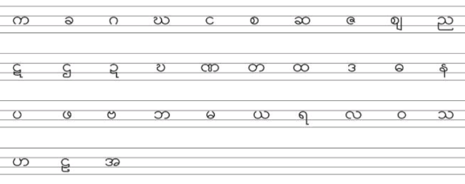
书写笔顺
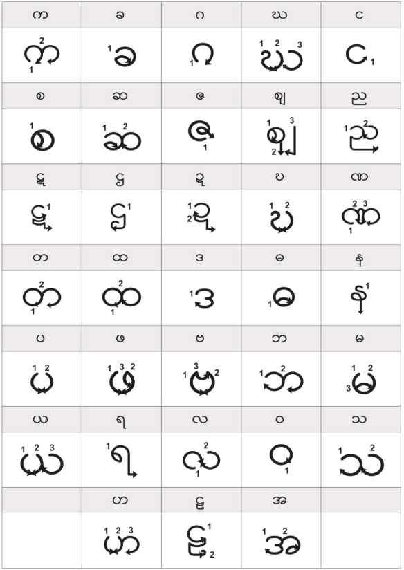
辅音字母罗马字母转写
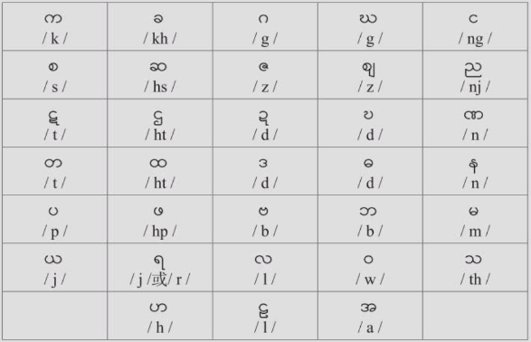
“ရ”还可以发卷舌音,但是多用于巴利语。
| 辅音字母 | 罗马字母 |
|---|---|
| က | /k/ |
| ခ | /kh/ |
| ဂ | /g/ |
| ဃ | /g/ |
| င | /ng/ |
| စ | /s/ |
| ဆ | /hs/ |
| ဇ | /z/ |
| ဈ | /z/ |
| ည | /nj/ |
| ဋ | /t/ |
| ဌ | /ht/ |
| ဍ | /d/ |
| ဎ | /d/ |
| ဏ | /n/ |
| တ | /t/ |
| ထ | /ht/ |
| ဒ | /d/ |
| ဓ | /d/ |
| န | /n/ |
| ပ | /p/ |
| ဖ | /hp/ |
| ဗ | /b/ |
| ဘ | /b/ |
| မ | /m/ |
| ယ | /y/ |
| ရ | /j/ 或 /r/ |
| လ | /l/ |
| ဝ | /w/ |
| သ | /th/ |
| ဟ | /h/ |
| ဠ | /l/ |
| အ | /a/ |
复辅音
复辅音指的是两个或两个以上辅音的组合。
根据组合的数量，分为：
双辅音：由两个辅音组合而成。
多辅音：由两个以上的辅音组合而成。
复辅音符号
共有 10 个复辅音符号，
-ျ (ယပင့်, Ya-ping)
-ြ (ရရစ်, Ya-yit)
-ွ (ဝဆွဲ, Wa-swe)
-ှ (ဟထိုး, Ha-hto)
-ျွ (ယပင့်ဝဆွဲ, Ya-ping Wa-swe)
-ြွ (ရရစ်ဝဆွဲ, Ya-yit Wa-swe)
-ျှ (ယပင့်ဟထိုး, Ya-ping Ha-hto)
-ြှ (ရရစ်ဟထိုး, Ya-yit Ha-hto)
ွှ (ဝဆွဲဟထိုး, Wa-swe Ha-hto)
-ြွှ (ရရစ်ဝဆွဲဟထိုး, Ya-yit Wa-swe Ha-hto)
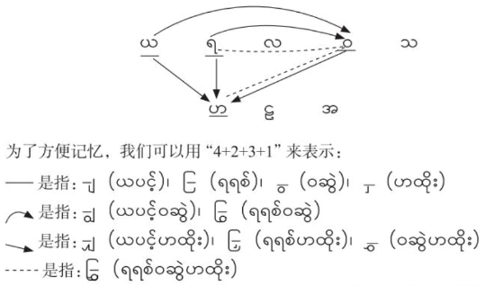
快速记忆
ပင့်ရစ်ဆွဲထိုးဆယ်မျိုး "Ping-yit Hswe-htoe Seh Myo" 10种
双辅音
根据语音顺序，双辅音可分为前辅音和后辅音两种。缅语中33个字母代表的辅音，大部分可作为前辅音，而可作后辅音的较少，仅有以下4个：
| 字母 | 符号 | 发音 |
|---|---|---|
| ယ | -ျ | /j/ |
| ရ | -ြ | /j/ |
| ဝ | -ွ | /w/ |
| ဟ | -ှ | /h/ |
这些后辅音大部分是半元音。
它们在辅音中通过符号来表示。
| 字母 | 符号 | 名称 |
|---|---|---|
| ယ /j/ | -ျ | ယပင့်, Ya-ping |
| ရ /j/ | -ြ | ရရစ်, Ya-yit |
| ဝ /w/ | -ွ | ဝဆွဲ, Wa-swe |
| ဟ /h/ | -ှ | ဟထိုး, Ha-hto |
Note:
ဝဆွဲ, Wa-swe作为符号出现时，书写形式没有变化。书写时作为下加符号出现。
-可以是任何一个辅音字母。
(1)双辅音ယပင့်和ရရစ်
ယပင့် Ya-ping 和ရရစ်, Ya-yit 可以和其他字母组合，具体拼读方式如下表：
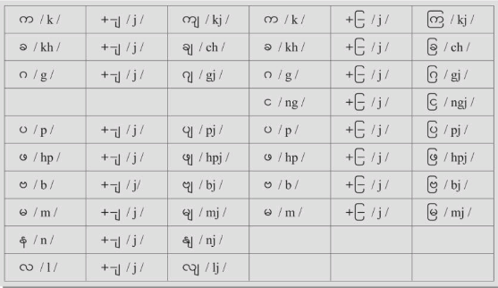
| က /k/ | + -ျ /j/ | ကျ /kj/ | က /k/ | + -ြ /j/ | ကြ /kj/ |
|---|---|---|---|---|---|
| ခ /kh/ | + -ျ /j/ | ချ /ch/ | ခ /kh/ | + -ြ /j/ | ခြ /chj/ |
| ဂ /g/ | + -ျ /j/ | ဂျ /gj/ | ဂ /g/ | + -ြ /j/ | ဂြ /gj/ |
| င /ng/ | + -ြ /j/ | ငြ /ngj/ | |||
| ပ /p/ | + -ျ /j/ | ပျ /pj/ | ပ /p/ | + -ြ /j/ | ပြ /pj/ |
| ဖ /hp/ | + -ျ /j/ | ဖျ /hpj/ | ဖ /hp/ | + -ြ /j/ | ဖြ /hpj/ |
| ဗ /b/ | + -ျ /j/ | ဗျ /bj/ | ဗ /b/ | + -ြ /j/ | ဗြ /bj/ |
| မ /m/ | + -ျ /j/ | မျ /mj/ | မ /m/ | + -ြ /j/ | မြ /mj/ |
| န /n/ | + -ျ /j/ | နျ /nj/ | |||
| လ /l/ | + -ျ /j/ | လျ /lj/ |
注意：(1)q/j/与c/ng/相拼时，发ည音。即：c+ရ\=c\=ည。(2)a/kh/和ယပC်၊ ရရစ合成复辅音时，使用的标识符号不是/j/而是变成/ch/。
NB:
ရ /j/ 与 င /ng/ 组合时，发ည音。i.e., င + ရ \= ငြ \= ည
ခ /kh/ 与 ယပင့် Ya-ping, ရရစ် Ya-yit 组合时，使用的标识符号不是 /j/ 而是 /ch/。
书写规则
符号"-ျ"加在辅音字母之后，居中、下两格。
符号"-ြ"加在辅音字母的外围，围在辅音字母的下、左、上方，居下、中、上三格。若辅音字母还有上加符号，则使用符号e.g.,"က်ြ"。
辅音字母"န"独立书写时，字形不变；若与复辅音相结合或以叠字出现时，字形变为e.g.,"နြ"。
书写范例
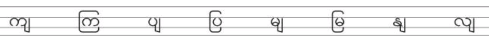
(2)双辅音ဝဆွဲ
ဝဆွဲ Wa-swe 的书写符号没有变化,可以直接跟其他辅音字母组合。
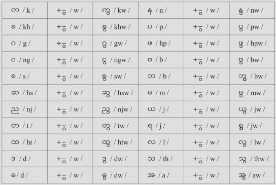
| က /k/ | + -ွ /w/ | ကွ /kw/ | န /n/ | + -ွ /w/ | နွ /nw/ |
|---|---|---|---|---|---|
| ခ /kh/ | + -ွ /w/ | ခွ /khw/ | ပ /p/ | + -ွ /w/ | ပွ /pw/ |
| ဂ /g/ | + -ွ /w/ | ဂွ /gw/ | ဖ /hp/ | + -ွ /w/ | ဖွ /hpw/ |
| င /ng/ | + -ွ /w/ | ငွ /ngw/ | ဗ /b/ | + -ွ /w/ | ဗွ /bw/ |
| စ /s/ | + -ွ /w/ | စွ /sw/ | ဘ /b/ | + -ွ /w/ | ဘွ /bw/ |
| ဆ /hs/ | + -ွ /w/ | ဆွ /hsw/ | မ /m/ | + -ွ /w/ | မွ /mw/ |
| ည /nj/ | + -ွ /w/ | ညွ /njw/ | ယ /j/ | + -ွ /w/ | ယွ /jw/ |
| တ /t/ | + -ွ /w/ | တွ /tw/ | ရ /j/ | + -ွ /w/ | ရွ /jw/ |
| ထ /ht/ | + -ွ /w/ | ထွ /htw/ | လ /l/ | + -ွ /w/ | လွ /lw/ |
| ဒ /d/ | + -ွ /w/ | ဒွ /dw/ | သ /th/ | + -ွ /w/ | သွ /thw/ |
| ဓ /d/ | + -ွ /w/ | ဓွ /dw/ | အ /a/ | + -ွ /w/ | အွ /aw/ |
书写规则
符号"-ွ"加在辅音字母(独体字)之正下方，加在辅音字母(联体字)之右下方，居下格。
"န"和ဝဆွဲ(-ွ)组合时，"န"的字形变为甩尾"နွ"。
"ရ"和ဝဆွဲ(-ွ)组合时，"ရ"的字形变为短的"ရွ"。
书写范例
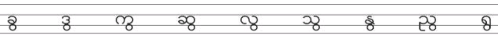
(3)双辅音ဟထိုး
ဟထိုး Ha-hto 可以和其他辅音字母组合。
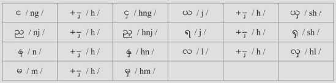
| င /ng/ | + -ှ /h/ | ငှ /hng/ | ယ /j/ | + -ှ /h/ | ယှ /jh/ |
|---|---|---|---|---|---|
| ည /nj/ | + -ှ /h/ | ညှ /hnj/ | ရ /j/ | + -ှ /h/ | ရှ /jh/ |
| န /n/ | + -ှ /h/ | နှ /hn/ | လ /l/ | + -ှ /h/ | လှ /hl/ |
| မ /m/ | + -ှ /h/ | မှ /hm/ |
书写规则
符号"-ှ"加在辅音字母(独体字)之正下方，加在辅音字母(联体字)之右下方，居下格。
ဟထိုး (-ှ) 与辅音字母拼写时，位置与"ဝဆွဲ"相同。若与辅音字母"င ng"相拼时，向上挑时不宜太长。
"န"和ဟထိုး(-ှ)组合时，"န"的字形变为甩尾"နှ"。
书写范例
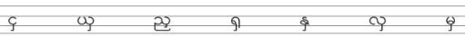
三合辅音、四合辅音
三合辅音和四合辅音，在这类复辅音中。
充当前音的只有：
က /k/ ခ /kh/ င /g/ ည /nja/ န /n/ မ /m/ ရ /j/ လ /l/ သ /th/等几个
充当后辅音的有：
ယ /j/ ရ /j/or/r/ ဝ /w/ ဟ /h/
它们均用符号来表示。例如：
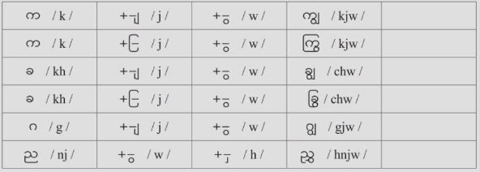
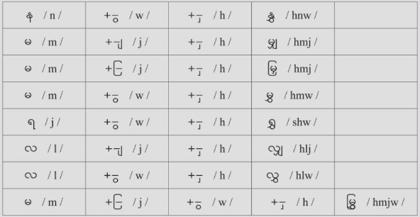
| က /k/ | + ျ /j/ | + ွ /w/ | \= ကျွ /kjw/ | |
|---|---|---|---|---|
| က /k/ | + ြ /j/ | + ွ /w/ | \= ကြွ /kjw/ | |
| ခ /kh/ | + ျ /j/ | + ွ /w/ | \= ချွ /chw/ | |
| ခ /kh/ | + ြ /j/ | + ွ /w/ | \= ခြွ /chw/ | |
| ဂ /g/ | + ျ /j/ | + ွ /w/ | \= ဂျွ /gjw/ | |
| ည /nj/ | + ွ /w/ | + ှ /h/ | \= ညွှ /hnjw/ | |
| န /n/ | + ွ /w/ | + ှ /h/ | \= နွှ /hnw/ | |
| မ /m/ | + ျ /j/ | + ှ /h/ | \= မျှ /hmj/ | |
| မ /m/ | + ြ /j/ | + ှ /h/ | \= မြှ /hmj/ | |
| မ /m/ | + ွ /w/ | + ှ /h/ | \= မွှ /hmw/ | |
| ရ /j/ | + ွ /w/ | + ှ /h/ | \= ရွှ /shw/ | |
| လ /l/ | + ျ /j/ | + ှ /h/ | \= လျှ /hlj/ | |
| လ /l/ | + ွ /w/ | + ှ /h/ | \= လွှ /hlw/ | |
| မ /m/ | + ြ /j/ | + ွ /w/ | + ှ /h/ | \= မြွှ /hmjw/ |
NB:
ယ /j/ ဝ /w/ 两个辅音只能跟 က /k/ ခ /kh/ 辅音结合成三合辅音, 然后与元音结合成一个音节。 当三个辅音结合时,舌根软腭音က ခ音先与ယ拼,变成腭化音ကျ /kj/，然后再与 ဝ /w/ 音结合成三合辅音ကျွ /kjw/。
ရ /j/ + ဝ /w/ 也只能跟 က /k/ ခ /kh/ ပ /p/ မ /m/ 辅音结合成三合辅音, 然后与元音结合成一个音节。
ဟ /h/ ယ /j/ 辅音只能跟 မ /m/ လ /l/ သ /th/ 结合。而 လ /l/ ယ /th/ 分别与 ဟ+ယ (h+j) 相拼时，大多数情况下发音变成 /sh/ 音。例如：လ + ဟ + ယ \= လျှ /sh/ 与元音အာ /a/ 相拼，成为 လျှာ /sha/。
ဟ /h/ + ရ /j/ 只能与鼻辅音 မ /m/ 结合。
ဝ /w/ + ဟ /h/ 只能与န /n/ မ /m/ ရ /j/ 相拼，而当它们与 ရ /j/ 结合成三合辅音时，发音变成 ရွှ/shw/。
书写规则
三合以上的辅音书写时
先写-ျ /j/ 或 -ြ /j/
再写 -ွ /w/，-ှ /h/
按ယ(-ျ) ရ(-ြ) ဝ(-ွ) ဟ(-ှ)的顺序依次书写。
书写范例
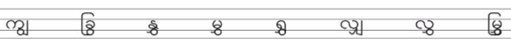
Lec2 သင်ခန်းစာ ၂ 基本元音အာ/a/
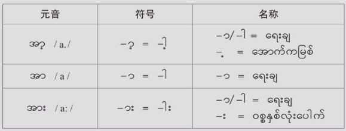
| 元音 | 符号 | 名称 |
|---|---|---|
| အာ့ /a./ | -ာ့ \= -ါ့ | -ာ/-ါ \= ရေးချ Yay-cha; -့ \= အောက်ကမြစ် Auk-ga-myit |
| အာ /a/ | -ာ \= -ါ | -ာ \= ရေးချ Yay-cha |
| အား /a:/ | -ား \= -ါး | -ာ/-ါ \= ရေးချ Yay-cha; -း \= ဝစ္စနှစ်လုံးပေါက် Wit-sa Hnit-lone-pauk |
发音方法
元音အ/a/有两种符号：
| /a./ | /a/ | /a:/ |
|---|---|---|
| -ာ့ /a./ | -ာ /a/ | -ား /a:/ |
| -ါ့ /a./ | -ါ /a/ | -ါး /a:/ |
发音练习
"အ"、"အာ"、"အား"、"ကာ"、"ခါး" 和 "ငါ" 的发音：
အ (A.) 高降调
အာ (A) 低平调
အား (A:) 高平调
ကာ (Ka) 低平调
ခါး (Kha:) 高平调
ငါ (Nga) 低平调
NB:
虽然 အ/a./ 与 အာ့ /a./ 发音一样，但不同符号有不同意义。有时元音 အ /a./ 也会发成央元音 /a/，例如：ကစား /gaza:/ [玩；运动]。
အ /a./ 为高降调, 通常不用符号来表示, 但有时用符号"-ာ့"或"-ါ့"表示读音；အာ /a/ 为低平调, 符号为"-ာ"或"-ါ"；အား /a:/ 为高平调, 符号为"-ား"或"-ါး"。有些字母加"-ာ"容易混淆，所以ခ/kh/, ဂ /g/, င/ng/, ဝ /w/, ဒ /d/, ပ /p/ 之后加"-ါ"。分别为：ခါ /kha/, ဂါ /ga/, ငါ /nga/, ဝါ /wa/, ဒါ /da/, ပါ /pa/。
辅音字母 ခ /kh/, ဂ /g/, င /ng/, ဒ /d/, ပ /p/, ဝ /w/ 和符号မောက်ချ(-ါ) Mauk-cha 相拼，不与ဝိုက်ချ(-၁) Waiʔ-cha 相拼写。
ဝိုက်ချ(-၁) Waiʔ-cha 和 မောက်ချ(-ါ) Mauk-cha 在拼读时都读作ရေးချ Yay-cha。
书写规则
后加符号“(-၁)”、“-ါ”加在辅音字母之后，“-၁”居中格，“-ါ”居上、中两格
再后加符号“-း”置于后加符号“-၁”或“-ါ”之后，居中格。
书写范例
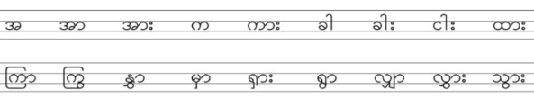
拼读练习
1 辅音字母拼读
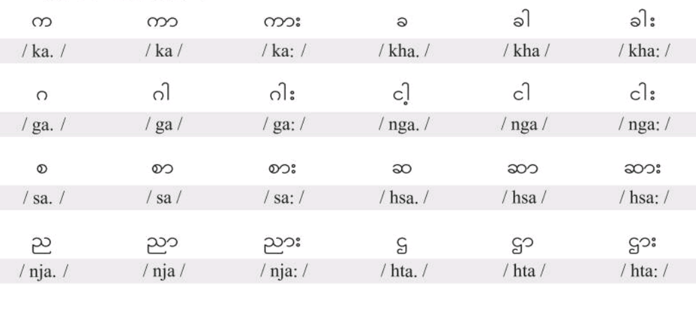
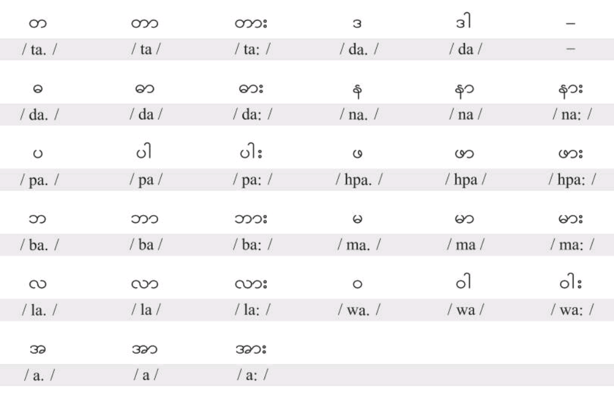
2 复辅音字母拼读

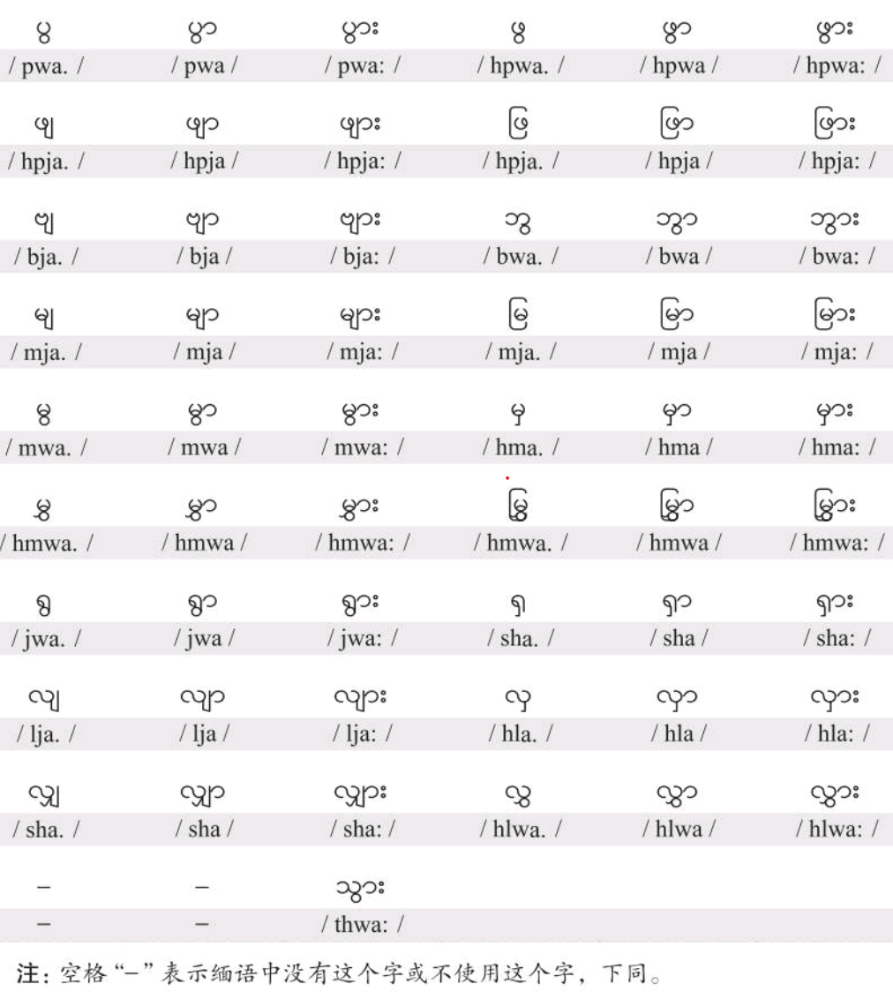
句型练习
句型1：ဝါကျပုံစံ (၁) Wa-kya-pone-zan (Taing)
လာ။ / la / 来。
လာပါ။ / la ba / 来吧。
မမ လာပါ။ / ma.ma. la ba / 姐姐来吧。
练习1：လေ့ကျင့်ရန် (၁) Lei-kyin-yan (Taing)
စား။ / sa: /吃。
စားပါ။ / sa:ba/ 吃吧。
ထားထား စားပါ။ / hta:hta: sa: ba/ 塔塔吃吧。
နား။ / na:/ 休息。
နားပါ။ / na: ba/ 休息吧。
မာမာ နားပါ။ / mama na: ba/ 玛玛休息吧。
ထ॥ /hta./ 起来。
ထပါ။ /hta.ba/ 起来吧。
ပပ ထပါ။ /pa.ba.hta.ba/ 巴巴起来吧。
က॥ /ka./ 跳舞。
ကပါ။ /ka.ba/ 跳舞吧。
ဝါဝါ ကပါ။/wawa ka.ba/ 瓦瓦跳舞吧。
ကစား॥ / ga za: / 玩。
ကစားပါ။ / gaza: ba/ 玩吧。
သားသား ကစားပါ။ / tha:tha:ga za: ba/ 宝宝(去)玩吧。
句型2：ဝါကျပုံစံ (၂) Wa-kya-pone-zan (Hnit)
ဒါ ငါးလား။ / da nga: la: / 这是鱼吗？
ဒါ ငါးပါ။ / da nga: ba/ 这是鱼。
练习2：လေ့ကျင့်ရန် (၂) Lei-kyin-yan (Hnit)
ဒါ ကားလား။ / da ka: la:/ 这是车吗？
ဒါ ကားပါ။ / da ka: ba / 这是车。
ဒါ ဆရာလား။ / da hsaja la: / 这是男老师吗?
ဒါ ဆရာပါ။ / da hsaja ba/ 这是男老师。
ဒါ ညစာလား။ /da nja.za la: / 这是晚餐吗?
ဒါ ညစာပါ။ / da nja.za ba / 这是晚餐。
ဒါ ရထားလား။ / da jahta: la: / 这是火车吗？
ဒါ ရထားပါ။ /da jahta: ba / 这是火车。
ဒါ စားစရာလား။ / da sa:zaja la: / 这是食物吗？
ဒါ စားစရာပါ။ / da sa:zaja ba / 这是食物。
课文词汇
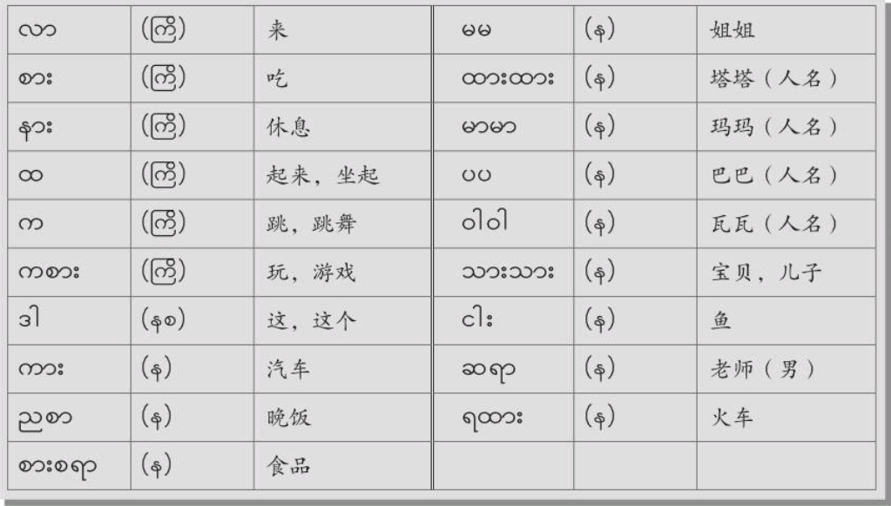
| 词汇 | 读音 | 词性 | 释义 |
|---|---|---|---|
| လာ | la | (ကြိ)v. | 来 |
| မမ | ma.ma | (န)n. | 姐姐 |
| စား | sa: | (ကြိ)v. | 吃 |
| ထားထား | hta:hta: | (န)n. | 塔塔（人名） |
| နား | na: | (ကြိ)v. | 休息 |
| မာမာ | ma.ma | (န)n. | 玛玛（人名） |
| ထ | hta | (ကြိ)v. | 起来，坐起 |
| ပပ | pa.ba | (န)n. | 巴巴（人名） |
| ကစား | ga za: | (ကြိ)v. | 玩，游戏 |
| သားသား | tha:tha: | (န)n. | 宝贝，儿子 |
| ဒါ | da | (နစ) pron. | 这，这个 |
| ငါး | nga: | (န)n. | 鱼 |
| ကား | ka: | (4) n. | 汽车 |
| ဆရာ | hsaja | (န)n. | 老师（男） |
| ညစာ | nja.za | (န)n. | 晚饭 |
| ရထား | jahta: | (န)n. | 火车 |
| စားစရာ | sa:zaja | (န)n. | 食品 |
语法 သဒ္ဒါအသုံးအနှုန်း Tha-da a-thone a-hnone
1 缅语词类
缅语词类可分为11种


| 全称 | 缩写 | 词性 |
|---|---|---|
| နာမ် Namn | (န) Na | 名词 n. |
| နာမ်စား Namn-sa | (နစ) Na-sa | 代词 pron. |
| နာမဝိသေသန Na-ma wi-thay-tha-na | (နဝိ) Na-wi | 形容词 adj. |
| ကြိယာ Kyi-ya | (ကြိ) | 动词 v. |
| ကြိယာဝိသေသန Kyi-ya wi-thay-tha-na | (ကြိဝိ) Kyi-wi | 副词 adv. |
| ပစ္စည်း Pyit-syi | (စည်း) Syi | 助词 part. |
| ပါဠိ Pa-li | (ပါ) Pa | 巴利语 Pāḷi |
| မျိုးပြစကားလုံး Myo-pya-za-ga-lone | (မ) Ma | 量词 meas. |
| ဝိဘတ် Wi-bat | (ဝိ) Wi | 介词 prep. |
| မြည်သံစွဲစကားလုံး Mye-tha-swe-za-ga-lone | (သံ) Tha | 拟声词 ono. |
| အာမေဍိတ် A-me-dait | (အာ) Aa | 感叹词 int. |
2 缅语基本句子结构和词序
最简单句式由单个动词构成，例如：က။ /ka/ 跳。 စား။ /sa:/ 吃。 သွား။ /swa:/ 走。
基本词序是:主语+谓语; 主语+宾语+谓语。谓语永远在句子的最后。有时候“动词+句尾助词”或“名词+句尾助词”也可以独立成句。
动词+句尾助词→祈使句名词+句尾助词→表语句例如：
E.g.,ထပါ။ /hta.ba/ 起来吧！
ကပါ။ /ka.ba/ 跳舞吧！
စားပါ။ /sa:ba/ 吃吧！
မမပါ။ /ma.ma.ba/ 是姐姐。
ဆရာပါ။ /hsaja.ba/ 是老师。
စားစရာပါ။ /sa:zaja.ba/ 是食品。
按照基本语序，句子可加入主语、宾语进行拓展。例如：
မမ ကပါ။ /ma.ma ka.ba/ 姐姐跳舞吧！
ဆရာမ နားပါ။ /hsaja na: ba/ 女老师休息吧！
ဝါဝါ ညစာစားပါ။ /wawa nja.za sa: ba/ 瓦瓦吃晚饭吧！
注意：口语中“ပါ”除了跟在短促调词语后之外，跟在其他声调词语后都变为浊音，读作“ဗါ”。
3 指示代词 ဒါ da
ဒါ da 为指示代词，意为“这是...”，后面不能加所指代的名词，例如：
ဒါ အစားအစာပါ။ / da a me daiʔ ba / 这是食物
ဒါ ကားပါ။ / da ka: ba / 这是汽车
ဒါ တာယာပါ။ / da ta ja ba / 这是轮胎
4 一般疑问句及其回答
缅语中，一般疑问句需要用句尾助词来体现。
本课中涉及的一般疑问句的基本句型为“名词、代词或名词、代词性词组+句尾助词လား”意为“是……吗？”
其中，လား为一般疑问句句尾助词。
一般疑问句可用句型“名词、代词+ပါ။ ”或“ဒါ+名词、代词+ပါ။ ”进行肯定回答。
例如：
ဆရာလား။ /hsaja la:/ 是老师吗？
ဆရာပါ။ /hsaja ba/ 是老师。
အသားလား။ /a tha: la:/ 是肉吗？
အသားပါ။ /a tha: ba/ 是肉。
ဒါ ငါးလား။ /da nga: la:/ 这是鱼吗？
ဒါ ငါးပါ။ /da nga: ba/ 这是鱼。
ဒါ လှလှလား။ /da hla hla la:/ 这是拉拉吗？
ဒါ လှလှပါ။ /da hla hla ba/ 这是拉拉。
ဒါ ကရားလား။ /da ka ra: la:/ 这是壶吗？
ဒါ ကရားပါ။ /da ka ra: ba/ 这是壶。
ဒါ ဘွားဘွားလား။ /da bwa: bwa: la:/ 这是奶奶（姥姥）吗？
ဒါ ဘွားဘွားပါ။ /da bwa: bwa: ba/ 这是奶奶（姥姥）。
5 标点符号
传统标点符号：
“၊” 表示句中的停顿，相当于汉语的逗号、分号或顿号。
“။” 表示句子的结束，相当于句号。
使用习惯：缅语使用标点符号主要是根据朗读时的停顿来定，因此传统标点符号较为简单。
现代标点符号的引入：受外来语言的影响，现代缅语逐渐引入了其他标点符号，如问号“？”，省略号“……”，引号“”和括号“（）”，使标点符号更加丰富和多样化。
补充词汇 ဖြည့်စွက်ဝေါဟာရများ Pye-swe wo-ha-ya mya
| 词汇 | 读音 | 释义 |
|---|---|---|
| ခဏ | kha. na | 一会儿 |
| ခဏခဏ | kha. na kha. na | 经常，多次 |
| ခါးနာ | kha: na | 腰痛 |
| ခါး | kha: | 腰 |
| ငါ | nga | 我 |
| စ | sa. | 开始 |
| စာ | sa | 文字，字 |
| ဆာ | hsa | 饿，渴 |
| ဆား | hsa: | 盐 |
| ည | nya. | 晚上 |
| ညာ | nya | 右 |
| ထား | hta: | 放 |
| ဓား | da: | 刀 |
| နာ | na | 难过，痛 |
| နား | na: | 耳 |
| ပဝါ | pa. wa | 头巾，披巾 |
| ဘဘ | ba ba | 伯父，大舅 |
| မာ | ma | 硬 |
| များ | mya: | 多 |
| ယာ | ya | 右 |
| ယား | ya: | 痒 |
| ရ | ya. | 得到，收到 |
| ရွာ | ywa | 下雨，农村 |
| လ | la. | 月亮，月 |
| လခ/လစာ | la kha / la sa | 月薪，工资 |
| လှ | hla. | 好看，漂亮 |
| ဝ | wa. | 胖，肥 |
| အ | a. | 哑，傻 |
| အား | a: | 有空 |
Lec3 သင်ခန်းစာ ၃ 基本元音အီ /i/
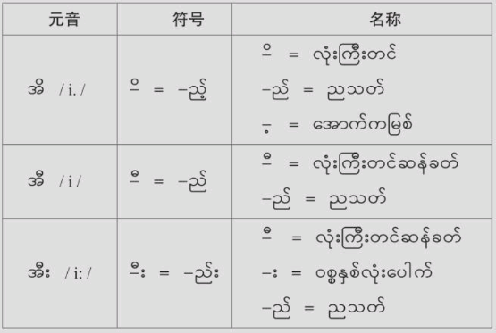
| 元音 | 符号 | 名称 |
|---|---|---|
| အိ /i./ | -ိ \= -ည့် | -ိ \= လုံးကြီးတင် /lun gyi: tin/; -ည် \= ညသတ် /nya that/; -့ \= အောက်ကမြစ် /auʔ ka myiʔ/ |
| အီ /i/ | -ီ \= -ည် | -ီ \= လုံးကြီးတင်ဆန်ခတ် /lun gyi: tin hsan khat/; -ည် \= ညသတ် /nya that/ |
| အိး /i:/ | -ိး \= -ည်း | -ီ \= လုံးကြီးတင်ဆန်ခတ် /lun gyi: tin hsan khat/; -း \= ဝစ္စနှစ်လုံးပေါက် Wit-sa Hnit-lone-pauk; -ည် \= ညသတ် /nya that/ |
发音方法
元音 အီ /i/ 有两种符号：
| /i./ | /i/ | /i:/ |
|---|---|---|
| -ိ /i./ | -ီ /i/ | -ီး /i:/ |
| -ည့် /i./ | -ည် /i/ | -ည်း /i:/ |
发音练习
"အိ"、"အီ"、"အီး"、"စီ"、"စည်း"、"နီး" 的发音：
အိ /i./ 为高降调
အီ /i/ 为低平调
အီး /i:/ 为高平调
စီ /si/ 为低平调
စည်း /si:/ 为高平调
နီး /ni:/ 为高平调
NB:
ဝစ္စနှစ်လုံးပေါက်(-း) 还可以叫ဝစ္စပေါက် 或 ရှေ့ကပေါက် 或 ရှေ့စီး,但是书写的符号只有一种。
词汇 发音 ဝစ္စနှစ်လုံးပေါက် (-း) /wits hnit lone pauʔ/ ဝစ္စပေါက် /wits pauʔ/ ရှေ့ကပေါက် /ʃe ka pauʔ/ ရှေ့စီး /ʃe si:/
书写规则
上加符号"-ိ"、"-ီ"加在独体字母的正上方，居上格；若辅音字母是联体字，则符号"-ိ"、"-ီ"加在右上方，居上格。
后加符号 "-ည်" 加在辅音字母之后。先写"-ည"，居中、下格，再写"-်"，居上格。
书写范例
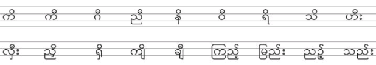
拼读练习
1 辅音字母拼读
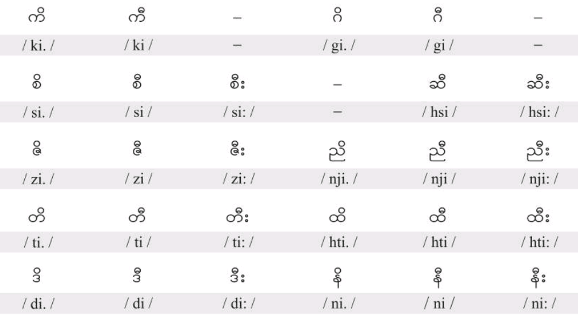
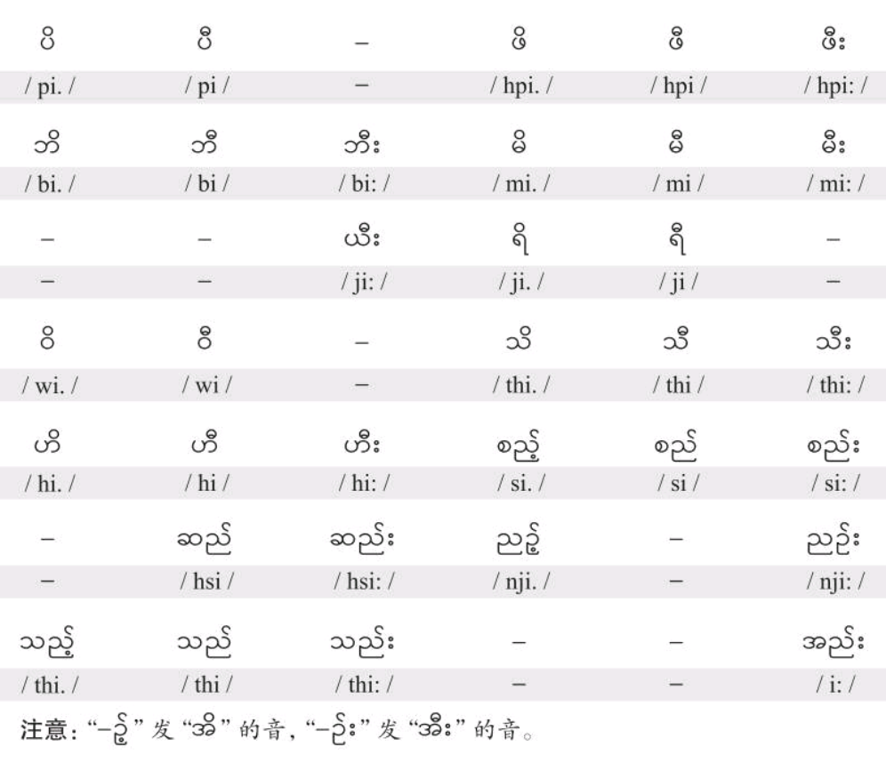
2 复辅音字母拼读

句型练习
句型1：ဝါကျပုံစံ (၁) Wa-kya-pone-zan (1)
စီးပါ။ / si: ba/ 乘坐(骑)。
ကားစီးပါ။ / ka: si: ba/ 坐车吧。
练习1：လေ့ကျင့်ရန် (၁) Lei-kyin-yan (1)
တီးပါ။ / ti: ba / 弹奏吧。
ဂီတာတီးပါ။ / gita: ti: ba / 弹吉他吧。
စီပါ။ /si ba/ 排列。
ညီညီစီပါ။ / nji nji si ba / 排整齐吧。
လှီးပါ။ / hli: ba/ 切(削)吧。
အသီးလှီးပါ။ /athi: hli: ba/ 切果吧。
မြည်းပါ။ /mji: ba/ 尝吧。
ဆီးသီး မြည်းပါ။ /zi:dhi: mji: ba / 尝枣子吧。
ကြည့်ပါ။ /kji.ba/看吧。
လကြည့်ပါ။/la.kji. ba / 看月亮吧（赏月吧)。
句型2：ဝါကျပုံစံ (၂) Wa-kya-pone-zan (Hnit)
မီးမီး ဒီမှာလား။ / mi:mi: di hma la: / 米米在这吗?
မီးမီး ဒီမှာပါ။ / mi:mi: di hma ba / 米米在这。
练习2：လေ့ကျင့်ရန် (၂) Lei-kyin-yan (Hnit)
ထီး ဒီမှာလား။ / hti: di hma la: / 伞在这吗?
ထီး ဒီမှာပါ။ / hti: di hma ba / 伞在这。
ပီပီ ဒီမှာလား။ / pipi di hma la:/ 哨子在这吗?
ပီပီ ဒီမှာပါ။ / pipi di hma ba / 哨子在这。
ဌာန ဒီမှာလား။ / htana. di hma la:/ 系(部门)办公室在这吗？
ဌာန ဒီမှာပါ။ / htana. di hma ba/ 系(部门)办公室在这。
ဆရာ ဒီမှာလား။ / hsaja di hma la: / 男老师在这吗？
ဆရာ ဒီမှာပါ။ / hsaja di hma ba/ 男老师在这。
နီနီ ဒီမှာလား။ /nini di hma la: / 尼尼在这吗？
နီနီ ဒီမှာပါ။ / nini di hma ba / 尼尼在这。
课文词汇
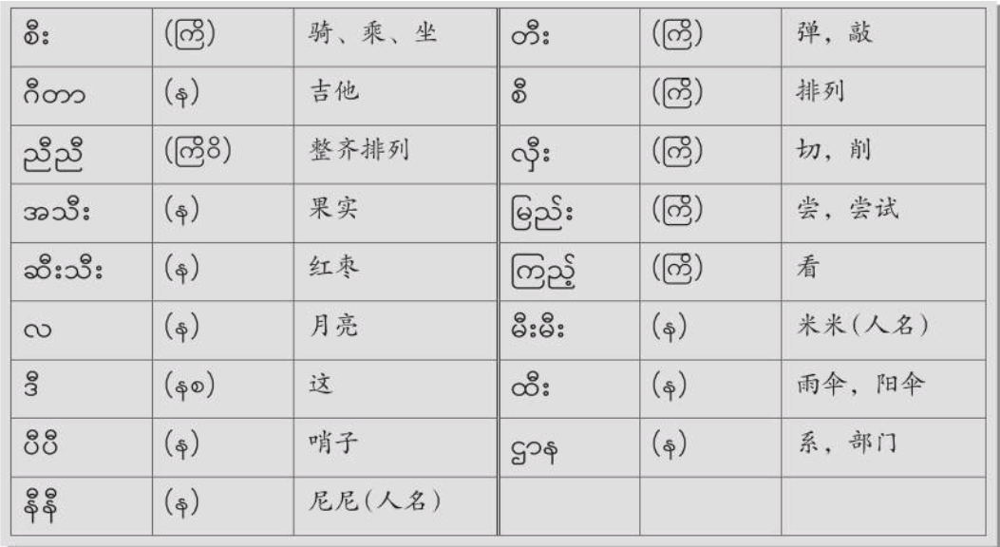
| 词汇 | 读音 | 词性 | 释义 |
|---|---|---|---|
| စီး | si: | (ကြိ)v. | 骑、乘、坐 |
| တီး | ti: | (ကြိ)v. | 弹，敲 |
| ဂီတာ | gita: | (န)n. | 吉他 |
| စီ | si. | (ကြိ)v. | 排列 |
| ညီညီ | nji nji | (ကြိဝိ)adv. | 整齐排列 |
| လှီး | hli: | (ကြိ)v. | 切，削 |
| အသီး | a thi: | (န)n. | 果实 |
| မြည်း | mji: | (ကြိ)v. | 尝，尝试 |
| ဆီးသီး | zi: dhi: | (န)n. | 红枣 |
| ကြည့် | kji. | (ကြိ)v. | 看 |
| လ | la | (န)n. | 月亮 |
| မီးမီး | mi:mi: | (န)n. | 米米（人名） |
| ဒီ | di | (နစ) pron. | 这，这个 |
| ထီး | hti: | (န)n. | 雨伞，阳伞 |
| ပီပီ | pi pi | (န)n. | 哨子 |
| ဌာန | htana. | (န)n. | 系，部门 |
| နီနီ | ni ni | (န)n. | 尼尼（人名） |
语法 သဒ္ဒါအသုံးအနှုန်း Tha-da a-thone a-hnone
1 一般疑问句 ဒီမှာလား။ Di hma la:
ဒီ /di/ 为指示代词，意为“这”
မှာ /hma/ 为地点状语助词，意为“在”
လား /la:/ 为一般疑问句句尾助词
三者结合后，“ဒီမှာလား။” /di hma la:/ 意思是“在这里吗？”。
该问句用于对人物、事物所在地进行提问。
“ဒီမှာပါ။” /di hma ba/ 在这里。是对上述问句的肯定回答形式。
那么，以上问答句型可拓展为：
问：名词、代词或名词代词性词组 + ဒီမှာလား။ /di hma la:/
答：名词、代词或名词代词性词组 + ဒီမှာပါ /di hma ba/
例句：
ထီး ဒီမှာလား။ / hti: di hma la: / 伞在这吗?
ထီး ဒီမှာပါ။ / hti: di hma ba / 伞在这。
မီးမီး ဒီမှာလား။ / mi:mi: di hma la: / 米米在这吗?
မီးမီး ဒီမှာပါ။ / mi:mi: di hma ba / 米米在这。
2 缅语中的变音现象
辅音的变化：
清辅音变为浊辅音。
浊辅音变为清辅音。
非鼻化音变成鼻化音。
但大多数变音情况是:清辅音->浊辅音。
示例：
က /k/, ခ /kh/ -> ဂ /g/
စ /s/ -> ဇ /z/
တ /t/, ထ /ht/ -> ဒ /d/
例如：ကစား၊ စကား၊ ညစာ၊ တကာ၊ ထားဝယ်
ကစား /ka.sa:/ 吃饭
စကား /sa.ka:/ 走路
ညစာ /nja.sa:/ 晚饭
တကာ /ta.ka:/ 放下
ထားဝယ် /hta:wai/
辅音字母在多音节词中的作用：
辅音字母位于多音节词的词首时，本身没有独立意义，并且和其他辅音字母连续时，通常轻读，即元音变为央元音。
在多音节词的最后一个音节时，辅音字母一般不轻读。
示例：
变音：အသီး /a.thi:/ 果实
အအေး /a.e:/ 冷的
不变音：
အက /a.ka./ 有
ခဏ /kha.na./ 一会儿
နဝမ /na.wa.ma./ 第九
ပထမ /pa.tha.ma/ 第一
补充词汇 ဖြည့်စွက်ဝေါဟာရများ Pye-swe wo-ha-ya mya
| 词汇 | 读音 | 释义 |
|---|---|---|
| ကီဝီသီးကျီး | ki wi thi: kyi: | 猕猴桃 |
| ကျီး | kyi: | 乌鸦 |
| ကြီး | kri: | 大 |
| ကြည်း | kji: | 陆地 |
| ချည် | chi | 绑，扎，掴 |
| ချည် | chi | 纱线 |
| ဆီ | si | 油 |
| ညီ | ni | 弟弟（男） |
| ထိ | thi. | 触，碰 |
| ထီ | thi | 彩票 |
| နီ | ni | 红的，红色的 |
| နီး | ni: | 近 |
| ပီ | pi | 清楚，准确 |
| ပြီး | pji: | 完结 |
| ပြည် | pji | 国家 |
| ဖီး | hpi: | 把（香蕉） |
| ဖြီး | hpji: | 梳，刷 |
| ဘီစီ | bhi si | 纪元前（BC） |
| ဘီး | bhi: | 梳子，刷子 |
| မိမိ | mi mi | 自己 |
| မြည် | mji | 响 |
| သိ | thi. | 知道，懂得 |
| ရှိ | hri. (shi.) | 有 |
| အီ | i | 感到油腻 feel queasy |
| အီး | i: | 屁 |
Lec4 သင်ခန်းစာ ၄ 基本元音အူ / u /
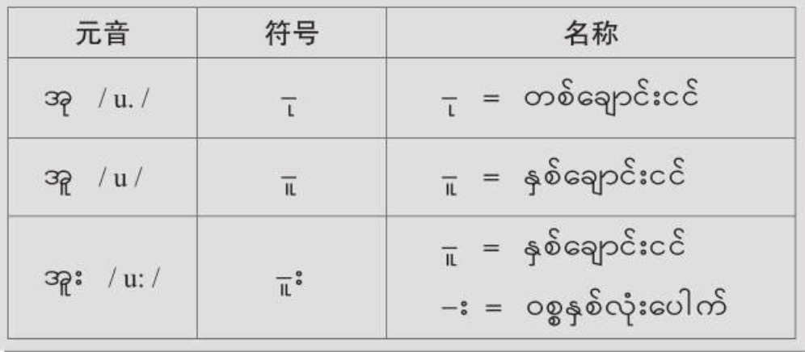
| 元音 | 符号 | 名称 |
|---|---|---|
| အု /u./ | -ု | -ု \= တစ်ချောင်းငင် /tit chaung nin/ |
| အူ /u/ | -ူ | -ူ \= နှစ်ချောင်းငင် /hniʔ chaung nin/ |
| အူး /u:/ | -ူး | -ု \= တစ်ချောင်းငင် /tit chaung nin/ -ူ \= နှစ်ချောင်းငင် /hniʔ chaung nin/ |
发音方法
元音 အူ /u/
发音练习
"အု", "အူ", "အူး", "ခု", "ညူး", "သူ"的发音：
အု /u./ 为高降调
အူ /u/ 为低平调
အူး /u:/ 为高平调
ခု /khu/ 为高降调
ညူး /nyu:/ 为高平调
သူ /thu/ 为低平调
书写规则
下加符号"-ု"、"-ူ"加在独体辅音字母正下方,居下格;若辅音字母是联体字,则符号加在右下方，居下格。
与辅音字母"န"相拼写时，န要改写。"-ု"、"-ူ"加在"န"正下方，居下格。写成"နု"、"နူ"。
辅音字母"ရ"有下加符号时,尾巴要缩短，"-ု"、"-ူ"加在"句"的正下方，居下格。写成"ရု"、"ရူ"、"ရူး"。
辅音字母"ဠ"、"ည"等长体字遇有下加符号时，元音符号"-ု"、"-ူ"、"-ူ"要写在基字之后，并且将其拉长与基字等同，居中、下两格，写成"ဠု"、"ညု"、"ညူ"、 "ညူး"
书写范例
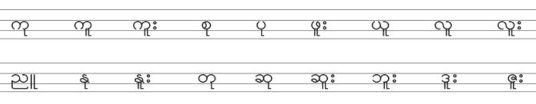
拼读练习
1 辅音字母拼读
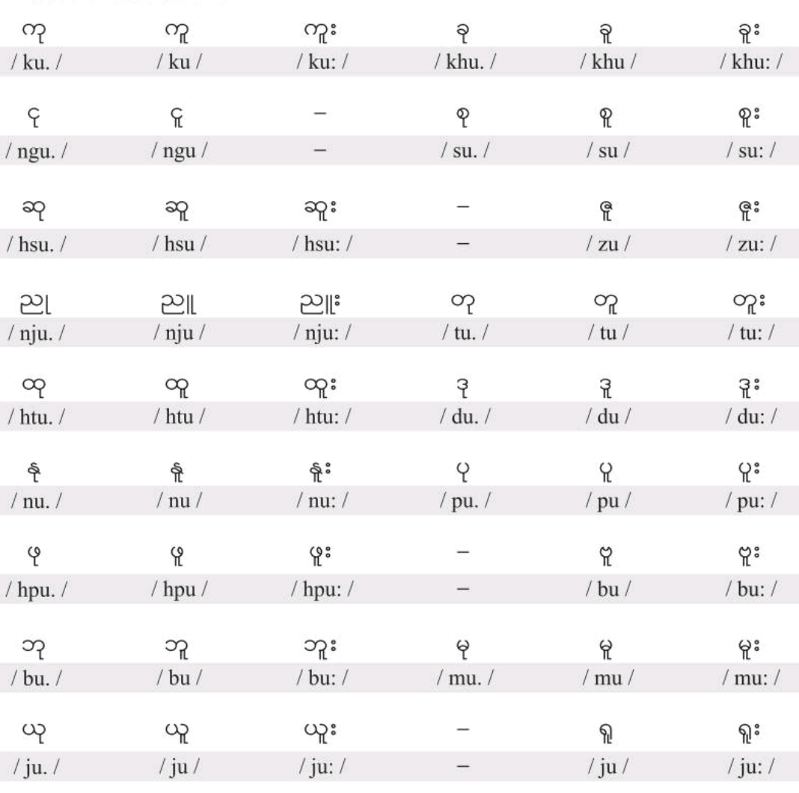
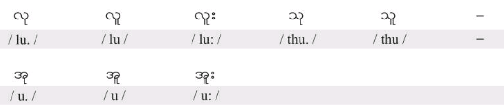
2 复辅音字母拼读

句型练习
句型1：ဝါကျပုံစံ (၁) Wa-kya-pone-zan
ကူးပါ။ /ku: ba/抄写。
မကူးဘူး။ /ma ku: bu:/ 不抄写。
练习1：လေ့ကျင့်ရန် (၁) Lei-kyin-yan
စုပါ။ / su. ba / 集合吧。
မစုဘူး။ / ma su. bu: / 不集合。
တူးပါ။ / tu: ba / 挖吧。
မတူးဘူး။ / ma tu: bu: / 不挖。
သွားပါ။ / thwa: ba / 走吧。
မသွားဘူး။ / ma thwa: bu: / 不走。
ထီးယူပါ။ / hti: ju ba/ 拿伞吧。
မယူဘူး။ / ma ju bu:/ 不拿。
ကစားပါ။ / gaza: ba / 去玩吧。
မကစားဘူး။ / ma gaza: bu: / 不去玩。
句型2：ဝါကျပုံစံ (၂) Wa-kya-pone-zan (Hnit)
စုစု ဘူးသီးခူးပါ။ / su.su. bu:dhi: khu: ba / 苏苏摘葫芦吧。
မခူး(ပါ)ဘူး။ / ma khu: ba bu: /不摘(了)。
练习2：လေ့ကျင့်ရန် (၂) Lei-kyin-yan (Hnit)
လူစုပါ။ / lu su.ba/ (大家)集合吧。
မစု(ပါ)ဘူး။ / ma su. ba bu: / 不集合(了)。
မူမူ အသီးစားပါ။ / mumu athi: sa: ba / 慕慕吃果吧。
မစား(ပါ)ဘူး။ / ma sa: ba bu: / 不吃(了)。
မမ ရထားစီးပါ။ / ma.ma. jahta: si: ba / 姐姐坐火车吧。
မစီး(ပါ)ဘူး။ / ma si: ba bu:/ 不坐(了)。
မာလာ ကူညီပါ။ / mala kunji ba / 玛拉(来)帮忙吧。
မကူညီ(ပါ)ဘူး။ /ma kunji ba bu: / 不帮。
ဖြူဖြူ ဘုရားဖူးပါ။ / hpuhpu hpaja: hpu: ba / 漂漂拜佛吧。
မဖူး(ပါ)ဘူး။ / ma hpu: ba bu: / 不拜(了)。
句型3：ဝါကျပုံစံ (၃)
ဒီဟာ ဘူတာလား။ / di ha buta la: / 这是火车站吗?
ဒီဟာ ဘူတာပါ။ / di ha buta ba/ 这是火车站。ဒီဟာ သမီးလား။ / di ha thami: la: / 这是女儿吗?
ဒီဟာ သမီးပါ။ / di ha thami: ba/ 这是女儿。
练习3：လေ့ကျင့်ရန် (၃)
ဒီဟာ တူလား။ / di ha tu la: / 这是筷子吗?
ဒီဟာ တူပါ။ / di ha tu ba/ 这是筷子。ဒီဟာ နာရီလား။ / di ha naji la: / 这是钟吗?
ဒီဟာ နာရီပါ။ / di ha naji ba / 这是钟。ဒီဟာ မီးပူလား။ / di ha mi:bu la: / 这是熨斗吗?
ဒီဟာ မီးပူပါ။ / di ha mi:bu ba / 这是熨斗。ဒီဟာ တူးတူးလား။ / di ha tu:tu: la: / 这是杜杜吗?
ဒီဟာ တူးတူးပါ။ / di ha tu:tu: ba /这是杜杜。ဒီဟာ သခွားသီးလား။ / di ha thakhwa:dhi: la: / 这是黄瓜吗?
ဒီဟာ သခွားသီးပါ။ / di ha thakhwa:dhi: ba / 这是黄瓜。
课文词汇
| 词汇 | 读音 | 词性 | 释义 |
|---|---|---|---|
| ကူး | ku: | (ကြိ)v. | 抄写 |
| စု | su | (ကြိ)v. | 集合 |
| တူး | tu: | (ကြိ)v. | 挖 |
| သွား | thwa: | (ကြိ)v. | 去，走 |
| ယူ | ju | (ကြိ)v. | 拿，取 |
| စုစု | su.su. | (န)n. | 苏苏（人名） |
| ဘူးသီး | bhu: dhi: | (န)n. | 瓠瓜，葫芦 |
| ခူး | khu: | (ကြိ)v. | 采，摘 |
| လူ | lu | (န)n. | 人 |
| မူမူ | mumu | (န)n. | 慕慕（人名） |
| မာလာ | mala | (န)n. | 玛拉（人名） |
| ကူညီ | ku ni | (ကြိ)v. | 帮助，帮忙 |
| ဖြူဖြူ | hpuhpu | (န)n. | 漂漂（人名） |
| ဘုရား | bhu. ya | (န)n. | 佛塔 |
| ဖူး | hpu: | (ကြိ)v. | 朝拜 |
| ဘူတာ | bu ta | (န)n. | 火车站 |
| သမီး | thami: | (န)n. | 女儿 |
| တူ | tu | (န)n. | 筷子 |
| နာရီ | na ji | (န)n. | 小时，钟表 |
| မီးပူ | mi: bu | (န)n. | 熨斗 |
| တူးတူး | tu: tu: | (န)n. | 杜杜（人名） |
| သခွားသီး | thakhwa: dhi: | (န)n. | 黄瓜 |
语法 သဒ္ဒါအသုံးအနှုန်း Tha-da a-thone a-hnone
1 否定句
否定句的基本句型为:မ /ma/ + 动词、形容词 + ဘူး /bu:/, 意为“不……”。
其中，မ 为然否副词，ဘူး 为否定句句尾助词。
例如：
မလာ(ပါ)ဘူး။ /ma la ba bu:/ 不来。
မသွား(ပါ)ဘူး။ /ma thwa: ba bu:/ 不走。
မလှ(ပါ)ဘူး။ /ma hla. ba bu:/ 不漂亮。
မသိ(ပါ)ဘူး။ /ma thi. ba bu:/ 不知道。
ဘဘ မစား(ပါ)ဘူး။ /ba.ba. ma sa: ba bu:/ 伯伯不吃。
မမ မထ(ပါ)ဘူး။ /ma.ma. ma tha. ba bu:/ 姐姐不起来。
NB:缅语中，ပါ 加在谓语后，表示文雅、尊敬。
若句子中的谓语是由 主谓结构词组 或 宾动结构词组充当时, 然否副词 မ 必须放在 主谓结构词组 和宾动结构词组中的动词或形容词的前面。
例如：
ဘုရားဖူးပါ။ / hpaja: hpu: ba / 拜佛吧！
ဘုရား မဖူးပါဘူး။ / hpaja: ma hpu: ba bu:/ 不拜佛。ရထား စီးပါ။ / jahta: si: ba / 坐火车吧！
ရထား မစီးပါဘူး။ / jahta: ma si: ba bu:/ 不坐火车。
2 ဒီဟာ /di ha/ 这是
ဒီဟာ /di ha/ 等于 ဒါ /da/, 表示"这个"或“这是"。
其中，ဟာ /ha/ 为缅语中的主语助词。
例如：
ဒီဟာ/ဒါ သခွားသီးလား။ /di ha(da) thakhwa:dhi: la:/ 这是黄瓜吗？
ဒီဟာ/ဒါ သခွားသီးပါ။ /di ha(da) thakhwa:dhi: ba/ 这是黄瓜。
补充词汇 ဖြည့်စွက်ဝေါဟာရများ Pye-swe wo-ha-ya mya
| 词汇 | 读音 | 释义 |
|---|---|---|
| ကုသ | ku tha | 治疗，医治 |
| ငါးခူ | nga: khu | 鲇鱼 |
| ဂူ | gu | 山洞 |
| ငုဝါ | nu wa | 金链花 |
| စု | su. | 集中 |
| စူး | su: | 扎，刺 |
| ဆု | hsu. | 奖品 |
| ဆူ | hsu | 沸腾 |
| ဆူး | hsu: | 刺 |
| တူ | tu | 侄儿,外甥 |
| တူမ | tu ma. | 侄女，外甥女 |
| ထု | thu. | 掏，敲，捶 |
| ထူ | thu | 厚 |
| ဒူးနာ | du: na | 膝盖疼 |
| နု | nu. | 嫩 |
| ပု | pu. | 矮 |
| ပူ | pu | 热 |
| ပြု | pju. | 做，干 |
| မူး | mu: | 头晕，醉 |
| ရူး | ju: | 发疯的 |
| ရှူ | shu | 呼吸，闻 |
| လု | lu | 抢，争 |
| လှူ | hlu | 捐献，布施 |
| ဝူရှူး | wu shu: | 武术 |
| သူ | thu | 他，她 |
| အခု | a khu. | 现在 |
| အပူ | a pu | 热 |
| အဖု | a hpu. | 疙瘩 |
| အူ | u | 肠 |
Lec5 သင်ခန်းစာ ၅ 基本元音အေ / ei /
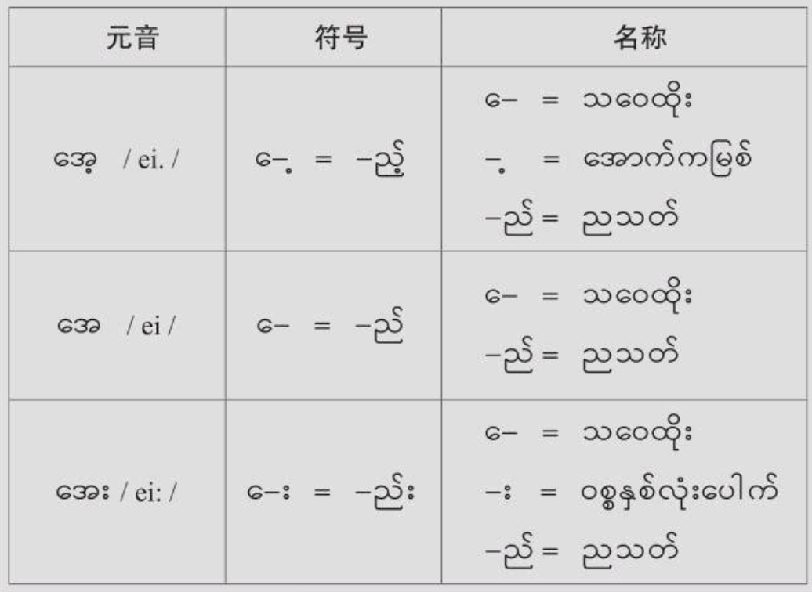
| 元音 | 符号 | 名称 |
|---|---|---|
| အေ့ /ei./ | ေ-့ \= - ည့် | ေ- \= သဝေထိုး / tha.wei.htoe / -့ \= အောက်ကမြစ် /a.auk.ga.myit/ -ည် \= ညသတ် /nya.thut/ |
| အေ /ei/ | ေ- \= ည် | ေ- \= သဝေထိုး / tha.wei.htoe / -ည် \= ညသတ် /nya.thut/ |
| အေး /ei:/ | ေ-း \= ည်း | ေ- \= သဝေထိုး / tha.wei.htoe / -း \= ဝစ္စနှစ်လုံးပေါက် /wit.sa.hnit.lone.bauk/ -ည် \= ညသတ် /nya.thut/ |
发音方法
元音 အေ /ei/ 有2种符号：
| /ei./ | /ei/ | /ei:/ |
|---|---|---|
| ေ-့ | ေ- | ေ-း |
| -ည့် | -ည် | -ည်း |
发音练习
" အေ့ ", " အေ ", " အေး ", " စေ ", " ရေး ", " သေး " 的发音:
အေ့ /ei./ 为高降调
အေ /ei/ 为低平调
အေး /ei:/ 为高平调
စေ /sei/ 为高降调
ရေး /yei:/ 为高平调
သေး /thei:/ 为高平调
NB:特殊符号 "ဧ" 发 "အေ" /ei/ 音
书写规则
"ေ-" 为为前加符号，加在辅音字母之前，居中格。
"-့" 为下加符号，加在独体辅音字母正下方或联体字母的右下方，居下格。
当单词是由多个符号组成时，下加符号“-့”得加在整体符号的后下方，居下格。
书写范例
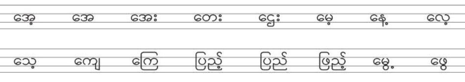
拼读练习
1 辅音字母拼读
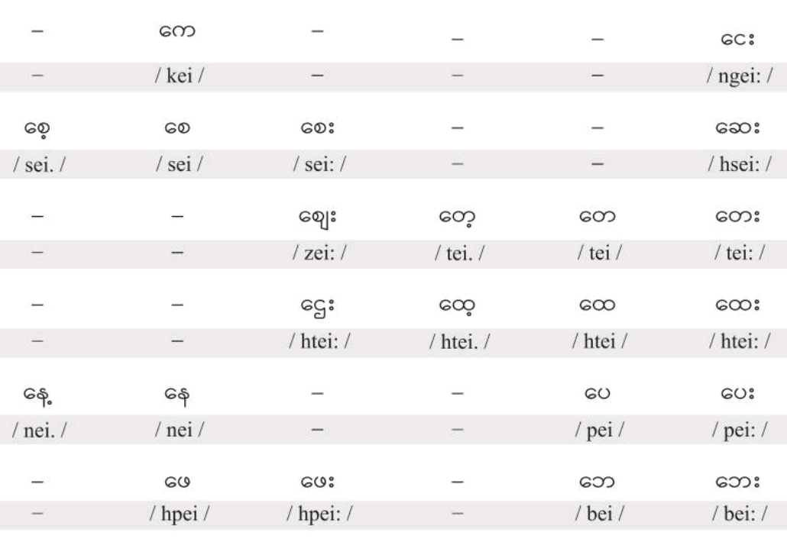

2 复辅音字母拼读
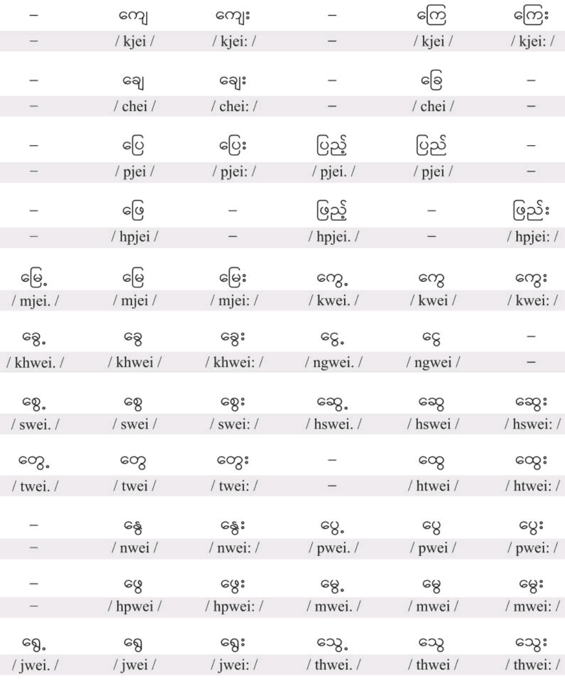
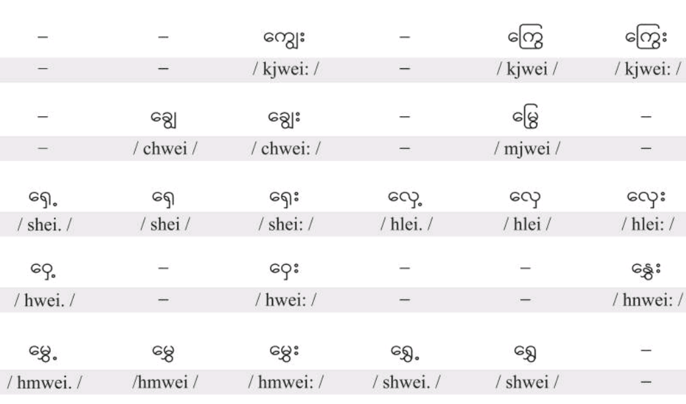
句型练习
句型1：ဝါကျပုံစံ (၁) wa.kya.pone.san (1)
မေးပါရစေ။ / mei: baja. zei / 请问……
မေးပါ။ /mei: ba/ 问吧。
练习1：လေ့ကျင့်ရန် (၁) le.kyn.yan (1)
ရေအေး ပေးပါရစေ။ /jeiei: pei: baja.zei/ 让我给你冷水吧。
ပေးပါ။ /pei: ba/ 好的。ဆေးပေးပါရစေ။ /hsei: pei: ba ja.zei/ 让我给你药吧。
ပေးပါ။ /pei: ba/ 好的。လှေစီးပါရစေ။ /hlei si: baja.zei/ 请允许我乘船。
စီးပါ။ /si: ba/ 坐吧。ဆွေးနွေးပါရစေ။ /hswei:nwei: baja.zei/ 请让我参与讨论吧。
ဆွေးနွေးပါ။ /hswei:nwei: ba/ 讨论吧。ခွေး မွေးပါရစ။ /khwei:mwei: ba ja. zei/ 请允许我养狗吧。
မွေးပါ။ / mwei: ba/ 养吧。
句型2：ဝါကျပုံစံ (၂) wa.kya.pone.san (2)
ကလေး ပြေးသလား။ / kalei: pjei: dhala: / 孩子跑步吗?
မပြေးပါဘူး။ / ma pjei: ba bu: /不跑步。
练习2：လေ့ကျင့်ရန် (၂) le.kyn.yan (2)
အမေ ဈေးသွားသလား။ / amei zei thwa: dhala:/ 妈妈去市场吗？
မသွားပါဘူး။ / ma thwa: ba bu: / 不去
ဖေဖေ လှေစီးသလား။ / hpeihpei hlei si: dhala: / 爸爸坐船吗?
မစီးပါဘူး။ / masi: ba bu: / 不坐。မမ ရေပေးသလား။ / ma.ma. jei pei: dhala: / 姐姐给水(给某人)吗?
မပေးပါဘူး။ / ma pei: ba bu:/ 不给。အေးအေး စာမေးသလား။ /ei:ei: sa mei: dhala: / 埃埃问问题?
မမေးပါဘူး။ / ma mei: ba bu: / 不问。ထွေးထွေး စာရေးသလား။ / htwei:htwei: sajei: dhala: / 推推写信吗？
မရေးပါဘူး။ / majei: ba bu:/ 不写。
课文词汇
| 词汇 | 读音 | 词性 | 释义 |
|---|---|---|---|
| မေး | mei: | (ကြိ)v. | 问 |
| ရေအေး | jeiei: | (န)n. | 凉水，冷水 |
| ပေး | pei: | (ကြိ)v. | 给 |
| ဆေး | hsei: | (န)n. | 药 |
| လှေစီး | hlei si: | (ကြိ)v. | 乘船 |
| ဆွေးနွေး | hswei:nwei: | (ကြိ)v. | 讨论 |
| ခွေး | khwei: | (န)n. | 狗 |
| မွေး | mwei: | ((ကြိ)v. | 养 |
| ကလေး | kalei: | (န)n. | 小孩 |
| ပြေး | pjei: | (ကြိ)v. | 跑 |
| အမေ | amei | (န)n. | 妈妈，母亲 |
| ဈေး | zei | (န)n. | 市场 |
| ဖေဖေ | hpeihpei | (န)n. | 爸爸，父亲 |
| အေးအေး | ei:ei: | (န)n. | 埃埃（人名） |
| ထွေးထွေး | htwei:htwei: | (န)n. | 推推（人名） |
| စာရေး | sajei: | (န)n. | 写字，写信 |
语法 သဒ္ဒါအသုံးအနှုန်း that.da.a.thone:a.hnun:
1 ပါရစေ။ /ba.zei/
祈使句句尾助词。
句型" 动词 + ပါရစေ။ "表示请求对方允许自己进行某个动作，为较文雅的用语。
相当于汉语“请允许我……”，例如:
သိပါရစေ။ /thi.baja.zei/ 请允许我知道！
စီးပါရစေ။ /si:baja.zei/ 请允许我坐（骑）！
ဈေးသွားပါရစေ။ /zei thwa: ba ja.zei/ 请允许我去市场！
စာမေးပါရစေ။ /sa mei: ba ja.zei/ 请允许我问问题！
အသီး ခူးပါရစေ။ /a.thi: khu: ba ja.zei/ 请允许我摘果！
သခွားသီး စားပါရစေ။ /thakhwa:dhi: sa: ba ja.zei/ 请允许我吃黄瓜
2 一般疑问句（二）
“动词、形容词 + သလား။ /dha.la:/ ”句型用于对动词、形容词的提问,意为“……吗?”例如：
စားသလား။ /sa: dha.la:/ 吃吗？
သွားသလား။ /thwa: dha.la:/ 去吗？
အးသလား။ /ei: dha.la:/ 冷吗？
ဝေးသလား။ /wei: dha.la:/ 远吗？
否定回答
“ မ /ma/ + 动词、形容词 + ဘူး။ /ba bu:/ ”句型进行否定回答，意为“不……”。例如：
မမ ရေကူးသလား။姐姐游泳吗？မမ ရေမကူးပါဘူး။ ဘဘ ထီးယူသလား။ ဘဘ ထီးမယူပါဘူး။ စားစရာ မရှိပါဘူး။姐姐不游泳。伯伯拿伞吗？伯伯不拿伞。စားစရာ ရှိသလား။有吃的吗？没有吃的。
မမ ရေကူးသလား။ /ma ma rei: khu: dha.la:/ 姐姐游泳吗？
မမ ရေမကူးပါဘူး။ /ma ma rei: ma khu: ba bu:/ 姐姐不游泳。ဘဘ ထီးယူသလား။ /bha:bha: thi: yu dha.la:/ 伯伯拿伞吗？
ဘဘ ထီးမယူပါဘူး။ /bha:bha: thi: ma yu ba bu:/ 伯伯不拿伞。စားစရာ ရှိသလား။ /sa:saya shi. dha.la:/ 有吃的吗？
စားစရာ မရှိပါဘူး။ /sa:saya ma shi. ba bu:/ 没有吃的。
补充词汇 ဖြည့်စွက်ဝေါဟာရများ phye.swet.wa.haya.mya:
| 词汇 | 读音 | 释义 |
|---|---|---|
| ကြေး | kjei: | 铜，钱币 |
| ကွေ့ | kwei | 转弯，拐弯 |
| ကျွေး | kjwei: | 喂养，请吃 |
| ကြွေ | kjwei | 陶瓷 |
| ကြွေး | kjwei: | 债务 |
| ချေး | chei: | 借（钱） |
| ချေး | chei: | 屎，粪 |
| ခြေဖဝါး | chei hpa. wa: | 脚掌，脚心 |
| ခြေမ | chei ma. | 脚拇指 |
| ချွေး | chwei: | 汗 |
| ချွေးမ | chwei: ma | 儿媳妇 |
| ငွေ | ngwei | 银，钱 |
| စေတီ | sei thi | 佛塔 |
| ဆေး | hsei: | 洗，检查 |
| တေးဂီတ | tei: gita. | 歌曲 |
| တွေ့ | twei. | 看到，遇见 |
| တွေး | twei: | 想 |
| နေ့ | nei. | 天，日 |
| နေ | nei | 太阳 |
| နွေရာသီ | nwei ya: thi | 夏季 |
| နွေး | nwei: | 温暖 |
| နှေး | hnei: | 慢 |
| နွှေး | hnwei: | 加热，温习 |
| ပွေ့ | pwei. | 抱，搂抱 |
| ဖြေ | hpjei | 回答，解答 |
| ဖြည့် | hpjei. | 填满，填充 |
| ဖြည်းဖြည်း | hpjei: hpjei: | 慢慢地 |
| မေ့ | mei. | 忘记 |
| မေး | mei: | 下巴 |
| မေးစေ့ | mei: sei. | 下巴尖 |
| မေ့ဆေး | mei. hsei: | 全身麻醉药 |
| မေဒေးနေ့ | mei dei: nei. | 五一国际劳动节 |
| မြီးရှည် | mji: shei | 米线 |
| မြေ | mjei | 土地 |
| မြွေ | mjwei | 蛇 |
| မွှေး | hmwei: | 香 |
| ရေနွေး | yei nwei: | 热水，开水 |
| ရွေး | jwei: | 选择，挑选 |
| ရှာလကာရည် | sha la. ka jei | 醋 |
| ရှေ့ | shei. | 前面 |
| ရွှေ | shwei | 黄金 |
| လေ | lei | 风，空气 |
| လေအေး | lei ei: | 冷风 |
| လေး | lei: | 重 |
| ဝေး | wei: | 远 |
| သေ | thei | 死 |
| သေး | thei: | 小 |
| သွေး | thwei: | 血 |
| အီကြာကွေး | i kya kwei: | 油条 |
| အီးမေးလ် | 邮件 | |
| အေး | ei: | 冷，凉 |
Lec6 သင်ခန်းစာ ၆ 基本元音 အယ် / e /
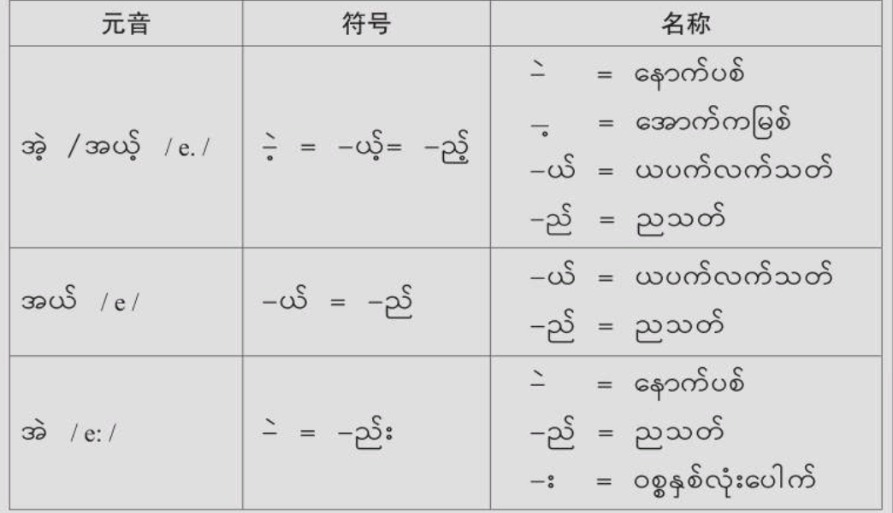
| 元音 | 符号 | 名称 |
|---|---|---|
| အဲ့ / အယ့် /e./ | -ဲ့ \= -ယ့် \= -ည့် | -ဲ \= နောက်ပစ် /nauk.pit/ -့ \= အောက်ကမြစ် /a.auk.ga.myit/ -ယ် \= ယပက်လက်သတ် ya.pyet.lat.thut/ -ည် \= ညသတ် /nya.thut/ |
| အယ် /e/ | -ယ် \= -ည် | -ယ် \= ယပက်လက်သတ် ya.pyet.lat.thut/ -ည် \= ညသတ် /nya.thut/ |
| အဲ /e:/ | -ဲ \= -ည်း | -ဲ \= ဝစ္စနှစ်လုံးပေါက် /wit.sa.hnit.lone.bauk/ -ည် \= ညသတ် /nya.thut/ -း \= ဝစ္စနှစ်လုံးပေါက် /wit.sa.hnit.lone.bauk/ |
发音方法
基本元音 အယ် /e/ 有2种符号：
| /e./ | /e/ | /e:/ |
|---|---|---|
| -ဲ့ | -ယ့် | -ဲ |
| -ည့် | -ည် | -ည်း |
发音练习
" အဲ့ ", " အယ် ", " အဲ ", " တဲ ", " ဝဲ ", " ဘယ် " 的发音:
အဲ့ /e./ 为高降调
အယ် /e/ 为低平调
အဲ /e:/ 为高平调
တဲ /te:/ 为高平调
ဝဲ /we:/ 为高平调
ဘယ် /bhe/ 为低平调
书写规则
上加符号 "-ဲ" 加在独体辅音字母的正上方，居上格; 若是联体辅音字母，则加在联体辅音字母的右上方，居上格。
后加符号 "-ယ်" 加在辅音字母之后，先写"ယ"，居中格; 再写“-်”，居上格。
书写范例
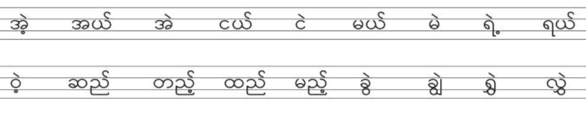
拼读练习
1 辅音字母拼读
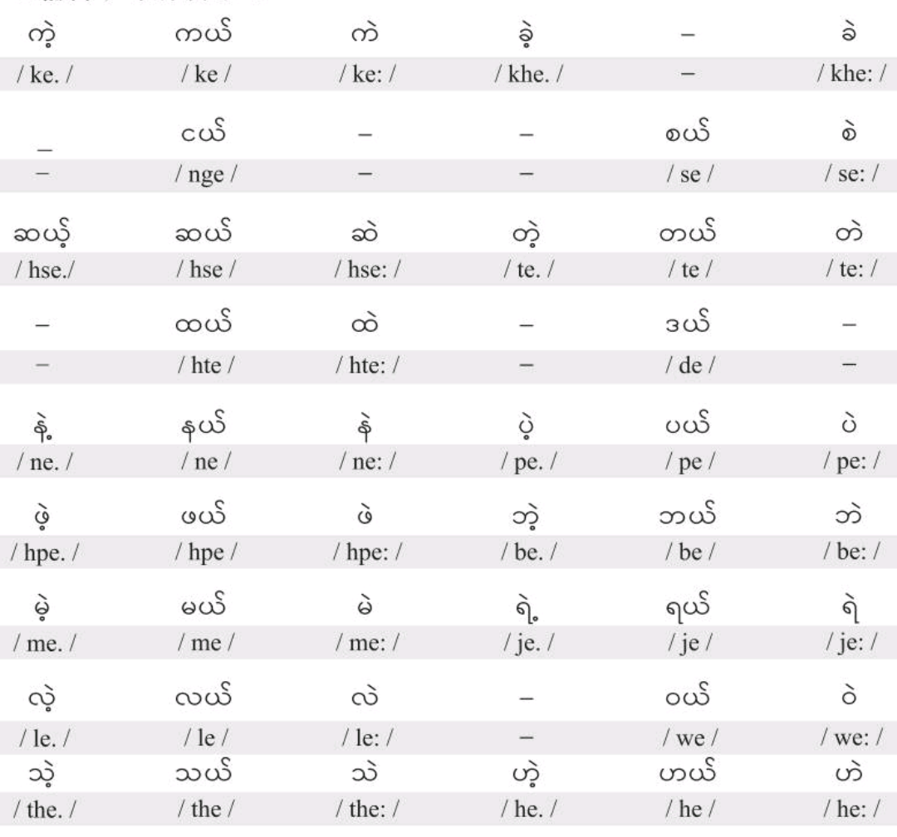
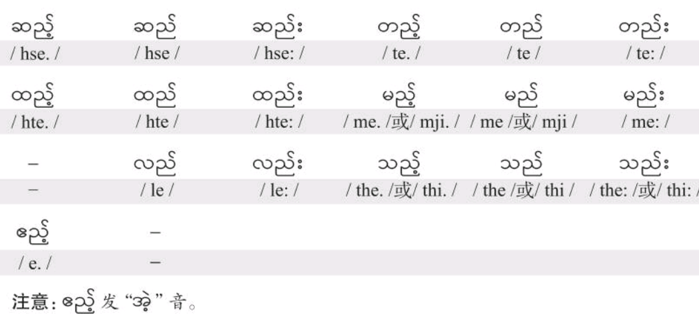
NB:
ဧည့် 发 အဲ့ /e./ 音
2 复辅音字母拼读
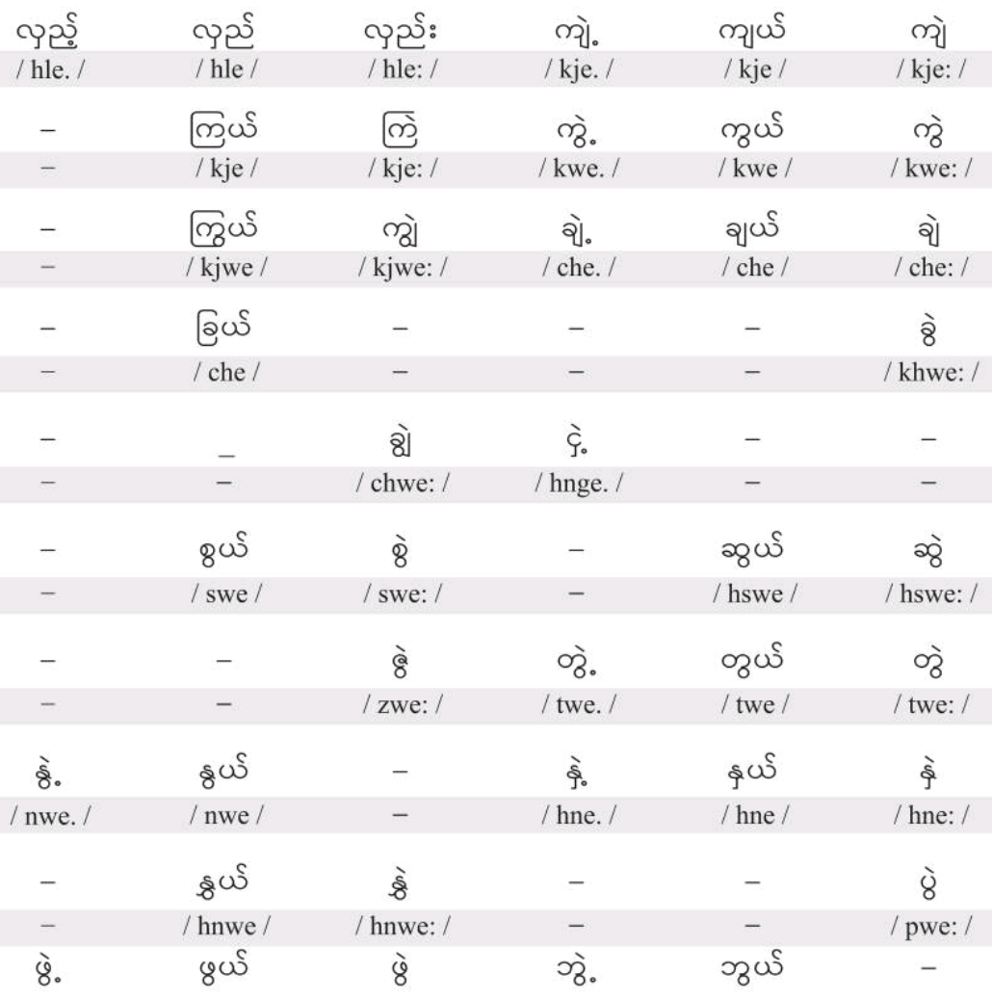
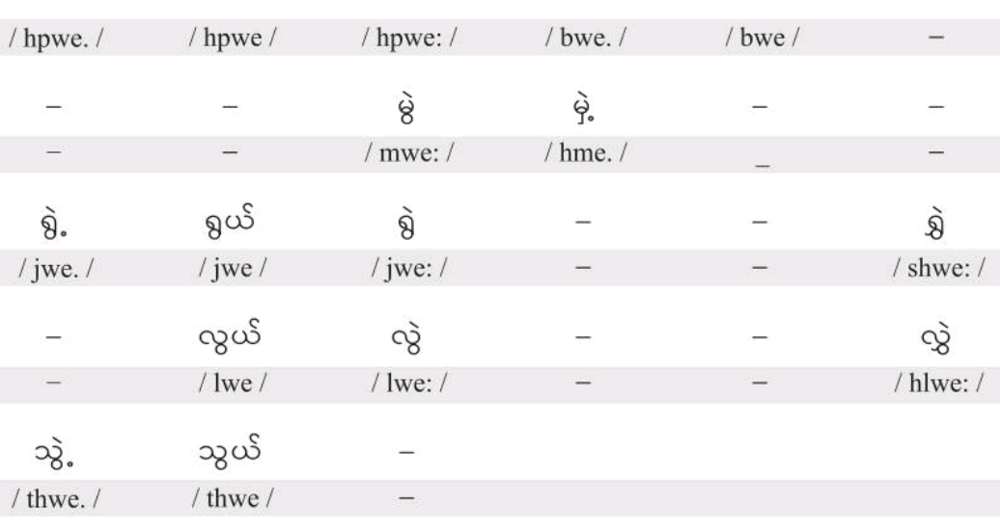
句型练习
句型1：ဝါကျပုံစံ (၁) wa.kya.pone.san (1)
မေမေ ဈေးဝယ်သလား။ / meimei zei: we dhala: / 妈妈买东西吗?
ဝယ်(ပါ)တယ်။ / we ba de /买了。အေးအေး ငွေလဲသလား။ /ei:ei: ngwei le: dhala: /埃埃要换钱吗
လဲ(ပါ)တယ်။ / le: ba de /换了。
练习1：လေ့ကျင့်ရန် (၁) le.kyn.yan (1)
ရဲရဲ မြေပဲပေးသလား။ /je:je: mjeibe: pei: dhala:/ 耶耶给花生了吗?
ပေး(ပါ)တယ်။ / pei:ba de / 给了。လဲ့လဲ့ ဘဲဥဝယ်သလား။ / le.le.be:u. we dhala:/ 列列买鸭蛋了吗？
ဝယ်(ပါ)တယ်။ / we ba de / 买了。နွယ်နွယ် ရေကဲ့သလား။ / newnwe jei ke. dhala: / 内内舀水了吗？
ကဲ့(ပါ)တယ်။ / ke. ba de / 舀了。သမီး ရေသယ်သလား။ / thami: jeithe dhala: / 女儿你挑水了吗？
သယ်(ပါ)တယ်။ / the ba de / 挑了。
句型2：ဝါကျပုံစံ (၂) wa.kya.pone.san (2)
စားပါရစ။ / sa: baja.zei/ 请允许我吃。
မစား(ပါ)နဲ့။/ ma sa: ba ne. / 别吃了！တွေ့ပါရစ။ /twei.baja.zei / 请允许我见面。
မတွေ့(ပါ)နဲ့။/ ma twei. ba ne. / 别见了！
练习2：လေ့ကျင့်ရန် (၂) le.kyn.yan (2)
ပွဲကြည့်ပါရစေ။ /pwe: kji.baja.zei/ 请让我去看晚会吧。
မကြည့်(ပါ)နဲ့။/ ma kji. ba ne. / 别看了！မဲပေးပါရစေ။ / me: pei: baja.zei / 请允许我投票吧。
မပေး(ပါ)နဲ့။ / ma pei: ba ne. / 别投了!ဆားဝယ်ပါရစ။ / hsa: we baja. zei / 请让我买盐吧。
မဝယ်(ပါ)နဲ့။/ ma we ba ne./ 别买了！ဖရဲသီး ကျွေးပါရစေ။ / hpaje:dhi: kjwei: baja.zei / 我请你吃西瓜吧。
မကျွေး(ပါ)နဲ့။/ ma kjwei: ba ne. / 别请了！
课文词汇
| 词汇 | 读音 | 词性 | 释义 |
|---|---|---|---|
| ဈေးဝယ် | zei we | (ကြီ)v. | 购物 |
| ဝယ် | we | (ကြိ)v. | 买 |
| လဲ | le: | (ကြ)v. | 换 |
| ရဲရဲ | je:je: | (န)n. | 耶耶（人名） |
| မြေပဲ | mjeibe: | (န)n. | 花生 |
| လဲ့လဲ့ | le.le. | (န)n. | 列列（人名） |
| ဘဲဥ | be:u | (န)n. | 鸭蛋 |
| နွယ်နွယ် | newnwe | (န)n. | 内内 |
| ရေကဲ့ | yei ke. | (န)v. | 舀水 |
| ကဲ့ | ke. | (ကြ)v. | 舀 |
| သယ် | the | (ကြီ)v. | 挑，搬 |
| တွေ့ | twei. | (ကြီ)v. | 见面 |
| ပွဲ | pwe: | (န)n. | 节会 |
| မဲ | me: | (န)n. | 票 |
| ဆား | hsa: | (န)n. | 盐 |
| ဖရဲသီး | hpaje:dhi: | (န)n. | 西瓜 |
语法 သဒ္ဒါအသုံးအနှုန်း that.da.a.thone:a.hnun:
1 တယ် /de/ 助词
谓语助词 或 一般陈述句句尾助词
"动词、形容词 + တယ်။ /de/" 可用于对以"သလား" /dha.la:/ 结尾的一般疑问句进行肯定回答。
例如：
ပေးသလား။ /pei: dha.la:/ 给吗？
ပေးပါတယ်။ /pei: ba de/ 给了。ပုလဲဆွဲကြိုး ဝယ်သလား။ /pu.le: swe: kyou: we dha.la:/ 买珍珠项链吗？
ဝယ်ပါတယ်။ /we ba de/ 买了。စာမေးပွဲ လွယ်သလား။ /sa: mei: pwe: lwe dha.la:/ 考试容易吗？
လွယ်ပါတယ်။ /lwe ba de/ 容易。
2 祈使句：မ /ma/ + 动词 + ပါနဲ့။ /ba ne/
表示请求、劝导对方不要发出某种动作，或 对对方所请求的事情表示不同意、不应允。
相当于汉语中的“别…”、“不要…”
与表示请求、劝导对方发出某种动作的祈使句"动词 + ပါ။ /ba/" 相反
例如：
ဈေးသွားပါရစေ။ /zei: thwa:baja.zei/ 请允许我去市场！
မသွား(ပါ)နဲ့။ /ma thwa: ba ne./ 别去！ထီးဝယ်ပါရစေ။ /hti: we baja.zei/ 请允许我买伞！
မဝယ်(ပါ)နဲ့။ /ma we ba ne./ 别买！ကျွေးပါရစေ။ /kjwei: baja.zei/ 请允许我请客！
မကျွေး(ပါ)နဲ့။ /ma kjwei: ba ne./ 别请！
3 句子的停顿
句子可以按照意思和结构分为几段
每段叫做一个“义群”
义群和义群之间就会有一定的停顿
在同一义群中的各个词之间不应该停顿，更不能在词中间停顿
例如：
ဆရာမက ငါးစားတယ်။ /hsayama.ka. nga: sa: te/ 女教师吃鱼。
缅语由助词表明句子成分之间的关系,助词与其表明的对象不能分割。
上述例句换一种停顿方式，就会变为：
ဆရာ မက ငါးစားတယ်။ /hsaya ma.ka. nga: sa: te/ 不仅男教师吃鱼。
例句1，主语是“女教师”，例句2主语是“除了男教师之外的其他人”。
再如：
ဆရာမ ကပါ။ /hsayama. ka ba/ 女老师跳舞吧！
ဆရာ မကပါ။ /hsaya ma ka ba/ 男老师不跳舞。
补充词汇 ဖြည့်စွက်ဝေါဟာရများ phye.swet.wa.haya.mya:
| 词汇 | 读音 | 释义 |
|---|---|---|
| ကဲ့ရဲ့ | ke.ye. | 嘲笑 |
| ကယ် | ke | 救 |
| ကျယ် | kje | 宽 |
| ကျွဲ | kjwe: | 水牛 |
| ချယ်ရီ | cheyi | 樱花 |
| ခွဲ | khwe: | 分开 |
| ငယ် | nge | 小，年幼 |
| ဆဲ | hse: | 骂 |
| ဆည်းလည်း | hse:le: | 合得来 |
| ဆွဲ | hswe: | 拉，拖 |
| ဆွဲကြိုး | hswe: kyou: | 项链 |
| တပည့် | ta:pei. | 学生 |
| တဲ | te: | 茅屋 |
| တည့် | tei. | 合得来 |
| တည်သီး | tei. thi: | 柿子 |
| နဲ့ | ne. | 和，与 |
| နယ် | ne | 拌，搓，揉 |
| ပဲ | pe: | 豆 |
| ပယ် | pe | 排除 |
| ပွဲစား | pwe: sa: | 中介 |
| ဖဲ | hpe: | 牌（赌具） |
| ဖယ် | hpe | 让开，避开 |
| ဘဲ | be: | 鸭，铃 |
| ဘယ် | be | 左边 |
| ဘွဲ့ | bwe. | 头衔，学位 |
| မည်း | me: | 黑 |
| ရဲ | je: | 警察 |
| ရဲမေ | je:mei | 女警官 |
| ရယ် | je | 笑 |
| လည် | le | 转，玩 |
| လယ် | le | 水田，稻田 |
| လွယ် | lwe | 容易 |
| လှည်း | hle: | 牛车，马车 |
| ဝဲ | we: | 左 |
| သဲ | the: | 沙 |
| ဧည့်သည် | e.the | 客人，来宾 |
Lec7 သင်ခန်းစာ ၇ 基本元音 အော် / o/
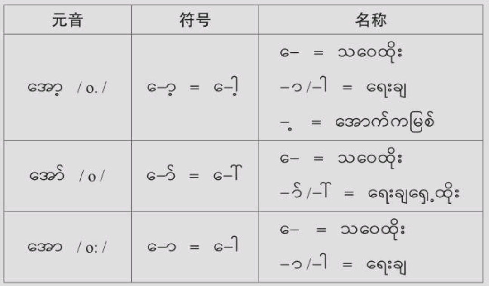
| 元音 | 符号 | 名称 |
|---|---|---|
| အော့ /o./ | ေ-ာ့ \= ေ-ါ့ | ေ- \= သဝေထိုး / tha.wei.htoe / -ာ / -ါ \= ရေးချ / ye:cha / -့ \= အောက်ကမြစ် /a.auk.ga.myit/ |
| အော် /o/ | ေ-ာ် \= ေ-ါ် | ေ- \= သဝေထိုး / tha.wei.htoe / -ာ် \= -ါ် \= ရေးချရှေ့ထိုး /ye:cha.shei.htoe/ |
| အော /o:/ | ေ-ာ\= ေ-ါ | -ာ / -ါ \= ရေးချ / ye:cha / |
发音方法
基本元音 အော် /o/ 有2种符号：
| /o./ | /o/ | /o:/ |
|---|---|---|
| ေ-ာ့ | ေ-ာ် | ေ-ာ |
| ေ-ါ့ | ေ-ါ် | ေ-ါ |
发音练习
" အော့ ", " အော် ", " အော ", " တော ", " လော့ ", " သော " 的发音:
အော့ /o./ 为高降调
အော် /o/ 为低平调
အော /o:/ 为高平调
တော /to:/ 为高平调
လော့ /lo./ 为高降调
သော /tho:/ 为高平调
NB:
“ဩ” 和 “သြော” 发 “အော” 音 /o:/
“သြော်” 发 “အော်” 音 /o/
书写规则
上加符号 “-်” 加在后加符号的正上方，或“-ါ”的右上方，居上格。
书写范例
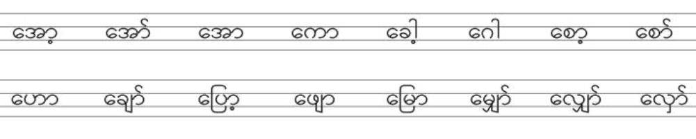
拼读练习
1 辅音字母拼读

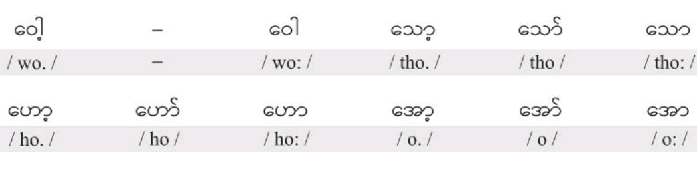
2 复辅音字母拼读

句型练习
句型1：ဝါကျပုံစံ (၁) wa.kya.pone.san (1)
မခေါ်(ပါ)နဲ့။ / ma kho ba ne. / 别叫。
ခေါ်မယ်။ /kho me/ 要叫。
练习1：လေ့ကျင့်ရန် (၁) le.kyn.yan (1)
မအော်(ပါ)နဲ့။ / ma o ba ne. / 别喊。
အော်မယ်။ /o me/ 要喊。မမော့(ပါ)နဲ့။ / ma mo. ba ne. / 别抬头。
မော့မယ်။ / mo. me / 要抬头。မရော(ပါ)နဲ့။/ ma jo: ba ne. / 别混。
ရာမယ်။ / jo: me / 要混。မလော(ပါ)နဲ့။ / ma lo: ba ne. / 别急。
လာမယ်။ /lo: me / 要急。မကြော်(ပါ)နဲ့။ / ma kjo ba ne. / 别炒。
ကြော်မယ်။ / kjo me / 要炒。
句型2：ဝါကျပုံစံ (၂) wa.kya.pone.san (2)
စကား မပြော(ပါ)နဲ့။ / zaga: ma pjo: ba ne. / 别说话。
စကား မပြော(ပါ)ဘူး။ / zaga: ma pjo: ba bu: / 没说话。
练习2：လေ့ကျင့်ရန် (၂) le.kyn.yan (2)
မဆော့(ပါ)နဲ့။ / ma hso. ba ne. / 别玩。
မဆော့(ပါ)ဘူး။ / ma hso. ba bu: / 没玩。မလျှော့(ပါ)နဲ့။ / ma sho. ba ne. / 别减少。
မလျှော့(ပါ)ဘူး။ / ma sho. ba bu: / 不减少မလျှော်(ပါ)နဲ့။/ ma sho ba ne. / 别洗。
မလျှော်(ပါ)ဘူး။ / ma sho ba bu: /没洗。မချော့(ပါ)နဲ့။/ ma cho. ba ne. / 别哄(小孩)。
မချော့(ပါ)ဘူး။ / ma cho. ba bu: / 没哄。မမျှော်(ပါ)နဲ့။ / ma hmjo ba ne. / 别盼望。
မမျှော်(ပါ)ဘူး။ / ma hmjo ba bu: /没盼望。
课文词汇
| 词汇 | 读音 | 词性 | 释义 |
|---|---|---|---|
| ခေါ် | kho | (ကြ)v. | 叫 |
| အော် | o | (ကြ)v. | 大声叫，吼 |
| မော့ | mo. | (ကြ)v. | 抬头 |
| ရော | jo: | (ကြ)v. | 弄混 |
| လော | lo: | (ကြ)v. | 着急 |
| ကြော် | kjo | (ကြ)v. | 炸，煎，炒 |
| ပြော | pjo: | (ကြ)v. | 说，讲 |
| ဆော့ | hso. | (ကြ)v. | 淘气，调皮 |
| လျှော့ | sho. | (ကြ)v. | 减少，减轻 |
| လျှော် | sho | (ကြ)v. | 洗 |
| ချော့ | cho. | (ကြ)v. | 哄，劝说 |
| မျှော် | hmjo | (ကြ)v. | 盼望 |
语法 သဒ္ဒါအသုံးအနှုန်း that.da.a.thone:a.hnun:
1 မ + 动词 + ပါ + နဲ့။ ma + v + ba + ne: (ref. Lecture 6)
表示阻止对方发出某动作，或劝说对方不要发出某动作。
例如：
မခေါ်ပါနဲ့။ / ma kho ba ne. / 别叫。
မအော်ပါနဲ့။ / ma o ba ne. / 别喊。
မဆော့ပါနဲ့။ / ma hso. ba ne. / 别玩。
2 将来时句型：动词+ မယ်။ /me/
"动词 + မယ်" 为将来时态。
其中，"မယ်" 是将来时态陈述句的句尾助词。
对别人阻止自己发出某种动作表示不同意，并确信会继续发出该动作。
例如：
မရယ်ပါနဲ့။ 别笑！ရယ်မယ်။要笑！
မရယ်ပါနဲ့။ / ma je ba ne. / 别笑。
ရယ်မယ်။ /je me/ 要笑。အသီး မခူးပါနဲ့။ /a.thi: ma khu: ba ne./ 别摘果！
ခူးမယ်။ /khu: me/ 要摘！မဆော့ပါနဲ့။ / ma hso. ba ne. / 别玩。
ဆော့မယ်။ /hso. me/ 要玩！
3 မ + 动词 + ပါ + ဘူး။ ma + v + ba + bu: (ref. Lecture 4, 5)
မ + 动词 + ဘူး။ /ma + (verb) + bu:/
မ 为然否副词
ဘူး 为否定句句尾助词
对别人阻止自己发出某种动作表示同意，并确信不会发出该动作。
例如：
မပြောပါနဲ့။ / ma pjo: ba ne. / 别说！
မပြောပါဘူး။ /ma pjo: ba bu:/ 不说。မအော်ပါနဲ့။ / ma o ba ne. / 别喊！
မအော်ပါဘူး။ /ma o ba bu:/ 不喊。မဝယ်ပါနဲ့။ / ma we ba ne. / 别买！
မဝယ်ပါဘူး။ /ma we ba bu:/ 不买。
补充词汇 ဖြည့်စွက်ဝေါဟာရများ phye.swet.wa.haya.mya:
| 词汇 | 读音 | 释义 |
|---|---|---|
| ကော်ပီ | ko pi | 复印稿 |
| ကော်ဖီ | ko hpi | 咖啡 |
| ကော်ဇော | ko jaw | 地毯 |
| ကျော် | kjo | 超过 |
| ချော | cho: | 漂亮 |
| ဂေါ်ဖီ | go: hpi | 卷心菜 |
| တော် | to | 优秀 |
| တော | to: | 森林 |
| ဒေါ်လာ | do la | 美元 |
| ဒေါ်လေး | do lei: | 小姨妈，小姑妈 |
| ဒေါသ | do: tha | 气愤 |
| ပေါ့ | po. | 轻，淡 |
| ပေါ် | po | 出现 |
| ပေါ | po: | 多，丰富 |
| ပျော် | pjo | 高兴 |
| အသီးဖျော်ရည် | a.thi: pjo je | 果汁 |
| ဘော်လီဘော | bo li bo: | 排球 |
| မော | mo: | 累 |
| ရောဂါ | jo: ga | 疾病 |
| လောက | lo: ka. | 社会，界 |
| လောဘ | lo: ba. | 贪心，贪欲 |
| လျော့ | ljo. | 减弱 |
| လျော်ကြေး | ljo kjei: | 赔款 |
| လျှော့ဈေး | sho.zei: | 减价 |
| ဝေါဟာရ | o ha ja | 词汇 |
| သော့ | tho. | 钥匙，锁 |
| ဟောပြောပွဲ | ho pjo pwe: | 演讲，讲座 |
| အော်ဒါ | o da | 订购，订货 |
| အော်ပရာ | o pa ja | 歌剧 |
| အော်ပရေတာ | o pa rei. tha | 报务员，操作员 |